СП 266.1325800.2016 «Конструкции сталежелезобетонные. Правила проектирования»
О документе: разработчики, утверждение, регистрация, ключевые слова
1 ИСПОЛНИТЕЛИ - Центральный научно-исследовательский институт строительных конструкций им. В.А. Кучеренко (ЦНИИСК им. В.А. Кучеренко) - институт АО «НИЦ «Строительство»
2 ВНЕСЕН Техническим комитетом по стандартизации ТК 465 «Строительство»
3 ПОДГОТОВЛЕН К УТВЕРЖДЕНИЮ Департаментом градостроительной деятельности и архитектуры Министерства строительства и жилищно-коммунального хозяйства Российской Федерации (Минстрой России)
4 УТВЕРЖДЕН приказом Министерства строительства и жилищно-коммунального хозяйства Российской Федерации (Минстрой России) от 30 декабря 2016 г. № 1030/пр и введен в действие с 1 июля 2017 г.
5 ЗАРЕГИСТРИРОВАН Федеральным агентством по техническому регулированию и метрологии (Росстандарт)
6 ВВЕДЕН ВПЕРВЫЕ
В случае пересмотра (замены) или отмены настоящего свода правил соответствующее уведомление будет опубликовано в установленном порядке. Соответствующая информация, уведомление и тексты размещаются также в информационной системе общего пользования - на официальном сайте разработчика (Минстрой России) в сети Интернет
© Минстрой России, 2016
Настоящий нормативный документ не может быть полностью или частично воспроизведен, тиражирован и распространен в качестве официального издания на территории Российской Федерации без разрешения Минстроя России
- 1 Область применения
- 2 Нормативные ссылки
- 3 Термины и определения
- 4 Общие положения
- 4.1Типы сталежелезобетонных конструкций
- 4.2 Основные требования к конструкциям
- 4.3 Основные положения по расчетам
- 4.4 Требования к расчетам
- 4.4.1. Расчет по прочности
- 4.4.2 Расчет по образованию и раскрытию трещин
- 4.4.3 Расчет по деформациям
- 4.4.4 Дополнительные требования к расчету комбинированных балок
- 4.4.5 Дополнительные требования к расчету трубобетонных элементов
- 5.1 Бетон
- 5.2 Арматура
- 5.3 Сталь
- 5.4 Стальные листовые профили
- 6 Расчет сталежелезобетонных конструкций, подверженных изгибу
- 6.1 Расчет сталежелезобетонных плит с профилированным настилом
- 6.1.1 Расчет плиты на стадии бетонирования
- 6.1.1.1 Нагрузки на настил на стадии бетонирования
- 6.1.1.2 Расчетные характеристики профилей настила
- 6.1.1.3 Расчет настила на прочность
- 6.1.1.4 Расчет на устойчивость стенок гофров на опорах
- 6.1.1.5 Расчет прогиба настила
- 6.1.2 Расчет плиты на стадии эксплуатации
- 6.1.2.1 Общие положения
- 6.1.2.2 Расчет прочности плиты по нормальным сечениям
- 6.1.2.3 Расчет прочности плиты по наклонным сечениям
- 6.1.2.4 Проверка прочности сцепления настила с бетоном
- 6.1.2.5 Расчет ребра плиты на опорах
- 6.1.2.6 Расчет плиты на образование и раскрытие трещин в растянутой зоне бетона
- 6.1.2.7 Расчет прогиба плиты
- 6.2 Расчет комбинированных балок
- 6.2.1 Расчет по прочности на действие изгибающих моментов
- 6.2.2 Расчет по прочности на действие поперечной силы
- 6.2.3 Потеря устойчивости плоской формы изгиба
- 6.2.4 Расчет конструкции объединения железобетонной плиты со стальной балкой
- 6.2.5 Расчет по предельным состояниям второй группы
- 6.2.6 Проверка жесткости
- 6.2.7 Расчет на выносливость
- 7 Расчет сталежелезобетонных конструкций на внецентренное сжатие и растяжение
- 7.1 Железобетонные конструкции с жесткой арматурой
- 7.1.1 Общие положения
- 7.1.2 Расчет по прочности на внецентренное сжатие
- 7.1.3 Расчет на растяжение
- 7.1.4 Расчет по предельным состояниям второй группы
- 7.2 Трубобетонные конструкции
- 7.2.1 Расчет сопротивления бетона и металла трубы
- 7.2.2 Расчет по предельным состояниям первой группы
- 7.2.3 Расчет по предельным состояниям второй группы
- 8 Конструктивные требования
- 8.1 Сталежелезобетонные плиты с профилированным настилом
- 8.1.1 Монолитная плита
- 8.1.2 Схемы работы настила
- 8.1.3 Расположение анкерных упоров
- 8.1.4 Армирование сталежелезобетонных плит
- 8.2 Комбинированные балки
- 8.3 Железобетонные конструкции с жесткой арматурой
- 8.3.1 Общие положения
- 8.3.2 Требования к размерам сечений элементов
- 8.3.3 Защитный слой бетона
- 8.3.4 Расстояние между отдельными ветвями жесткой арматуры
- и отдельными стержнями гибкой арматуры
- 8.3.5 Продольное армирование элементов
- 8.3.6 Поперечное армирование элементов
- 8.3.7 Анкеровка арматуры
- 8.3.8 Стыки элементов
- 8.3.9 Расположение анкерных упоров
- 8.4 Трубобетонные конструкции
- 8.4.1 Общие положения
- 8.4.2 Требования к размерам
- 8.4.3 Требования к узлам примыкания окружающих конструкций
- 8.4.4 Требования к армированию
- 8.5 Устройства для обеспечения сцепления стальной конструкции с бетоном
Дата введения 2017-07-01
УДК 624.012.3/4, 624.014.2 ОКС 91.080.01;
91.080.10;
91.080.40
Ключевые слова: конструкции сталежелезобетонные, комбинированные балки, сталежелезобетонные плиты, балки, колонны, конструкции комбинированные, расчет сталежелезобетонных конструкций, профилированный настил, жесткая арматура, стальной сердечник, внешнее армирование, несъемная опалубка, трубобетон, трубобетонные конструкции, надежность сталежелезобетонных конструкций, долговечность сталежелезобетонных конструкций, трещиностойкость, гибкий упор, жесткий упор, стад-болт, конструирование сталежелезобетонных конструкций, конструктивные требования, расчет конструкции объединения стальной и железобетонной части сечения
РАЗРАБОТЧИК
| ЦНИИСК им. В.А. Кучеренко (АО «НИЦ «Строительство») Директор, д.т.н., проф. | ЦНИИСК им. В.А. Кучеренко (АО «НИЦ «Строительство») Директор, д.т.н., проф. | И.И. Ведяков |
|---|---|---|
| Ответственный исполнитель | Зав.сектором ВЗиС, к.т.н. | Д.В. Конин |
| Исполнитель | Старший научный сотрудник | Л.С. Рожкова |
| ЗАО «ГОРПРОЕКТ» Научный руководитель работы | Д.т.н., проф., академик РААСН | В.И. Травуш |
Введение
5 Материалы
Настоящий свод правил составлен с учетом требований Федеральных законов от 27 декабря 2002 г. № 184-ФЗ «О техническом регулировании», от 22 июня 2008 г. № 123-ФЗ «Технический регламент о требованиях пожарной безопасности», от 30 декабря 2009г. № 384-ФЗ «Технический регламент о безопасности зданий и сооружений».
Свод правил разработан авторским коллективом ЦНИИСК им. В.А. Кучеренко - институт АО «НИЦ «Строительство», РААСН, НИИЖБ им. А.А. Гвоздева - институт АО «НИЦ «Строительство», ООО «ЦНИИПСК им. Мельникова», ООО «ТЕХСОФТ», ЗАО «ГОРПРОЕКТ», ЗАО «ЭРКОН», НИУ МГСУ:
Руководитель работы - д-р техн. наук В.И. Травуш (ЗАО «ГОРПРОЕКТ», РААСН); д-р техн. наук И.И. Ведяков , д-р техн. наук П.Д. Одесский, , кандидаты техн. наук Д.В. Конин , Пронин Д.Г., инженеры А.С. Крылов , Л.С. Рожкова (ЦНИИСК им. В.А. Кучеренко); д-р техн. наук С.Б. Крылов (НИИЖБ им. А.А. Гвоздева); канд. техн. наук Э.Л. Айрумян , инженеры Н.И. Каменщиков , О.А. Хабилевская (ООО «ЦНИИПСК им. Мельникова»; д-р техн. наук В.А. Семенов , канд. техн. наук Е.Г. Викторов, канд. физ.-мат. наук В.А. Голованов (ООО «ТЕХСОФТ); инженер А.С. Мартиросян (ЗАО «ГОРПРОЕКТ»); д-р техн. наук Г.И. Белый (ЗАО «ЭРКОН»); инженер Смирнов П.П . (НИУ МГСУ).
1Область применения
Требования настоящего свода правил не распространяются на проектирование конструкций мостов, транспортных тоннелей, труб под насыпями, конструкций гидротехнических и других специальных сооружений, а также на конструкции, изготавливаемые из бетонов плотности менее 500 и свыше 2500 кг/м³ , бетонополимеров и полимербетонов, бетонов на известковых, шлаковых и смешанных вяжущих, на гипсовом и специальных вяжущих, бетонов на специальных и органических заполнителях, бетонов крупнопористой структуры.
1 Кроме сталежелезобетонных плит с профилированным настилом, диапазон температур которых не ниже минус 50°С и не выше 40°С.
Свод правил
Composite steel and concrete structures. Design rules агрессивных сред), конструкций уникальных зданий и сооружений, зданий атомных электростанций, а также специальных видов конструкций (например, предварительно напряженных, пространственных, висячих), следует соблюдать дополнительные требования, предусмотренные соответствующими нормативными документами, в которых отражены особенности работы этих конструкций.
2Нормативные ссылки
В настоящем своде правил использованы нормативные ссылки на следующие документы:
ГОСТ 8829-94 Изделия строительные железобетонные и бетонные заводского изготовления. Методы испытаний нагружением
ГОСТ 14918-80 Сталь тонколистовая оцинкованная с непрерывных линий. Технические условия
ГОСТ 23118-2012 Конструкции стальные строительные. Общие технические условия
ГОСТ 27751-2014 Надежность строительных конструкций и оснований. Основные положения
ГОСТ 27772-2015 Прокат для строительных стальных конструкций. Общие технические условия
ГОСТ 30247.0-94 (ИСО 834-75) Конструкции строительные. Методы испытаний на огнестойкость
ГОСТ Р 1.4 - 2004 Стандарты организаций. Общие положения
ГОСТ Р 52246-2004 Прокат листовой горячеоцинкованный. Технические условия
ГОСТ Р 55738-2013 Шпильки и керамические кольца для сварки
СП 2.13130.2012 «Системы противопожарной защиты. Обеспечение огнестойкости объектов защиты» (с изменением № 1)
СП 14.13330.2014 «СНиП II-7-81* Строительство в сейсмических районах» (с изменением № 1)
СП 16.13330.2011 «СНиП II-23-81* Стальные конструкции» (с изменением № 1)
СП 20.13330.2011 «СНиП 2.01.07-85* Нагрузки и воздействия»
СП 22.13330.2011 «СНиП 2.02.01-83* Основания зданий и сооружений»
СП 28.13330.2012 «СНиП 2.03.11-85 Защита строительных конструкций от коррозии» (с изменением № 1)
СП 43.13330.2012«СНиП 2.09.03-85 Сооружения промышленных предприятий»
СП 48.13330.2011 «СНиП 12-01-2004 Организация строительства»
СП 63.13330.2012 «СНиП 52-01-2003 Бетонные и железобетонные конструкции. Основные положения» (с изменениями № 1, № 2)
СП 70.13330.2012 «СНиП 3.03.01-87 Несущие и ограждающие конструкции»
СП 122.13330.2012 «СНиП 32-04-97 Тоннели железнодорожные и автодорожные»
СП 130.13330.2012 «СНиП 3.09.01-85 Производство сборных железобетонных конструкций и изделий»
СП 131.13330.2012 «СНиП 23-01-99 Строительная климатология» (с изменением № 1)
Примечание - При пользовании настоящим сводом правил целесообразно проверить действие ссылочных документов в информационной системе общего пользования -на официальном сайте федерального органа исполнительной власти в сфере стандартизации в сети Интернет или по ежегодному информационному указателю «Национальные стандарты», который опубликован по состоянию на 1 января текущего года, и по выпускам ежемесячного информационного указателя «Национальные стандарты» за текущий год. Если заменен ссылочный документ, на который дана недатированная ссылка, то рекомендуется использовать действующую версию этого документа с учетом всех внесенных в данную версию изменений. Если заменен ссылочный документ, на который дана датированная ссылка, то рекомендуется использовать версию этого документа с указанным выше годом утверждения (принятия). Если после утверждения настоящего свода правил в ссылочный документ, на который дана датированная ссылка, внесено изменение, затрагивающее положение, на которое дана ссылка, то это положение рекомендуется применять без учета данного изменения. Если ссылочный документ отменен без замены, то положение, в котором дана ссылка на него, рекомендуется применять в части, не затрагивающей эту ссылку. Сведения о действии сводов правил целесообразно проверить в Федеральном информационном фонде стандартов.
3Термины и определения
В настоящем своде правил приведены термины по ГОСТ 27751, ГОСТ Р 1.4, СП 16.13330, СП 63.13330, а также следующие термины с соответствующими определениями:
- 3.1бетонное ядро
- Бетонная часть трубобетонных конструкций.
- 3.2гибкий упор
- Конструктивный элемент, объединяющий стальную и железобетонную части сталежелезобетонной конструкции при их совместной работе и возможном незначительном взаимном сдвиге; выполняется в виде арматурных петель и анкеров (в том числе на колоннах), коротышей из арматуры или калиброванной стали, стад-болтов с круглой головкой и т.д.
- 3.3дюбель
- Стальной гвоздь для соединения профилированного настила и уголковых анкерных упоров к опорной балке с помощью специального порохового пистолета.
- 3.4железобетонные конструкции с жесткой арматурой
- Сталежелезобетонные конструкции, состоящие из бетона, жесткой арматуры, выполненной из конструкционной стали, и стержневой арматуры.
- 3.5жесткий упор
- Конструктивный элемент, объединяющий стальную и железобетонную части сталежелезобетонной конструкции, не допускающий их сдвига друг относительно друга; выполняется в виде коротышей из фасонной стали, уголковых упоров и т.д.
- 3.6комбинированная балка
- Сталежелезобетонная конструкция, состоящая из железобетонной плиты и стальной балки, объединенных для совместной работы с помощью специальных упоров или обетонированием стальных балок.
- 3.7конструкционная сталь
- Материал стального элемента сталежелезобетонной конструкции.
- 3.8опорная балка
- Стальная или железобетонная балка, поддерживающая плиту.
- 3.9профилированный настил
- Соединенные между собой гофрированные листы из оцинкованной стали, выполняющие функции несъемной опалубки и внешней рабочей арматуры монолитной плиты.
- 3.10рифление (рифы) на настиле
- Местные вмятины и выпуклости, регулярно расположенные на стенках гофров профилированных листов, образованные при их прокатке для повышения сцепления настила с бетоном плиты.
- 3.11самонарезающий винт
- Самосверлящий стальной винт для крепления профилированного настила к балке на стадии монтажа.
- 3.12сдвиговое соединение
- Соединение между бетонным и стальным компонентами сталежелезобетонного элемента, исключающее сдвиг одного компонента относительно другого и позволяющее рассчитывать оба компонента как части единого конструктивного элемента.
- 3.13совместная работа
- Восприятие нагрузки сталежелезобетонным элементом, в котором бетонная и стальная компонента деформируются как единая конструкция.
- 3.14стад-болт
- Гибкий упор в виде калиброванного стального стержня с головкой, приваренного одним концом к стальной конструкции.
- 3.15сталежелезобетонный каркас
- Каркас, в котором значительная часть элементов или наиболее нагруженные элементы являются сталежелезобетонными.
- 3.16сталежелезобетонные плиты с профилированным настилом
- Монолитные бетонные или железобетонные плиты с профилированным настилом, выполняющим функции несъемной опалубки на стадии изготовления плиты и внешней рабочей арматуры совместно с гибкими стержнями на стадии эксплуатации плиты.
- 3.17сталежелезобетонные конструкции
- Конструкции, выполненные из монолитного и/или сборного железобетона, конструкционной стали или профилированного настила и гибкой арматуры, в которых обеспечена их совместная работа.
- 3.18стержневая арматура
- Арматура в виде отдельных стержней, каркасов и сеток.
- 3.19трубобетонные конструкции
- Сталежелезобетонные конструкции, состоящие из наружной стальной оболочки в виде круглой трубы и внутреннего бетонного ядра с рабочей и конструктивной стержневой арматурой или без нее; расчетные усилия от всех воздействий в трубобетонных конструкциях должны быть восприняты бетоном, металлом трубы и рабочей стержневой арматурой.
4Общие положения
4.1Типы сталежелезобетонных конструкций
Настоящий свод правил следует применять для конструкций следующих типов:
- сталежелезобетонные плиты с профилированным настилом, конструкция плиты с профилированным настилом показана на рисунке 4.1.
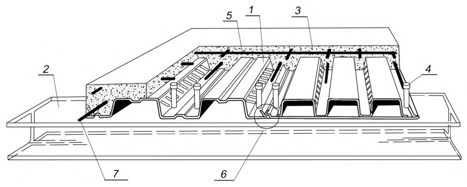
- 1 - стальной профилированный настил с рифлеными стенками гофров;
- 2 - элемент балочной клетки; 3 - монолитный бетон плиты;
- 4 - стержневой анкер; 5 - сетка противоусадочного армирования;
- 6 - соединение гофрированных профилей между собой ; 7 рабочая арматура
Рисунок 4.1 -Конструкция сталежелезобетонной плиты, армированная профилированным настилом
- комбинированные балки, основные типы поперечных сечений приведены на рисунке 4.2.
- а) стальная балка и плита объединены с помощью анкерных упоров; б) стальная балка частично обетонирована и объединена с плитой с помощью анкерных упоров; в) стальная балка и плита с вутами объединены с помощью анкерных упоров; г) стальная балка частично обетонирована, сборные железобетонные плиты опираются на нижний пояс балки через лист; д) опирание плиты по профилированному настилу на стальную балку (промежуточная опора настила), е) опирание плиты по профилированному настилу на частично обетонированную стальную балку (крайняя опора настила); ж) полное обетонирование стальной балки; з) опирание железобетонной плиты на нижний пояс балки, анкерные упоры на полке балки; и) опирание железобетонной плиты на нижний пояс балки, анкерные упоры на стенке балки
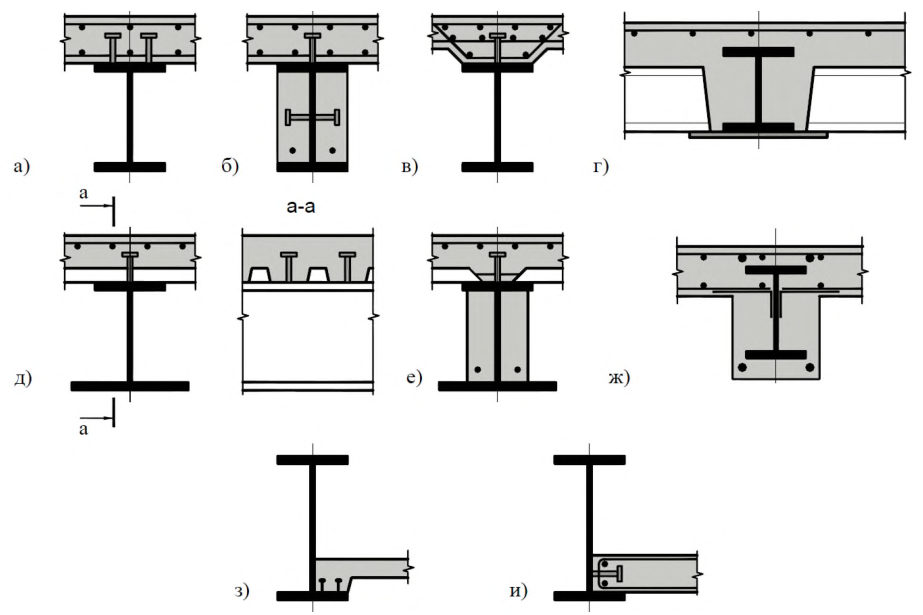
Рисунок 4.2 - Варианты поперечных сечений комбинированных балок
- железобетонные конструкции с жесткой арматурой, работающие на центральное или внецентренное сжатие, растяжение, типовые поперечные сечения показаны на рисунке 4.3.
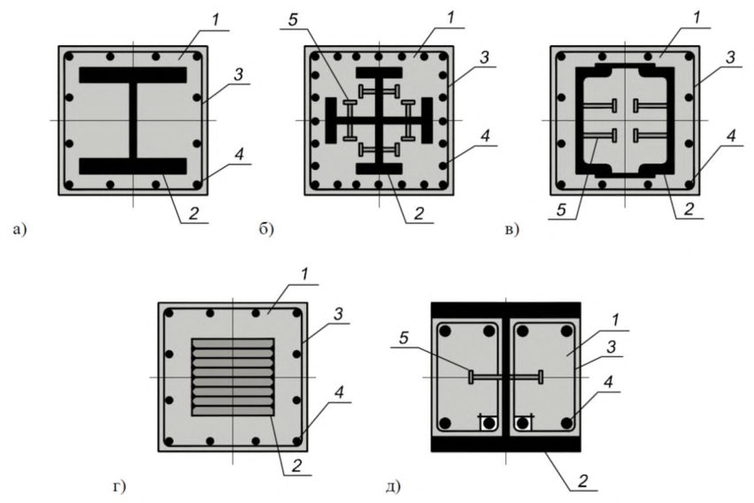
1 -бетон; 2 - жесткая арматура; 3 - поперечная гибкая арматура; 4 - продольная гибкая арматура; 5 - анкерный упор
- а) жесткая арматура в форме двутавра; б) жесткая арматура в форме крестообразного сечения; в) жесткая арматура коробчатого сечения, образованого швеллерами, объединенными планками; г) жесткая арматура в виде «сердечника», «сляба» сплошного сечения; д) сечение с частичным обетонированием жесткой арматуры
Рисунок 4.3 -Типовые поперечные сечения железобетонных конструкций с жесткой арматурой
- трубобетонные конструкции с внешней стальной оболочкой в виде круглой трубы, с бетонным ядром без арматуры или с бетонным ядром, армированным продольной гибкой арматурой (с железобетонным ядром). Соответствующие типы сечений показаны на рисунке 4.4.
1 - бетонное ядро; 2 - труба; 3 - продольная гибкая арматура
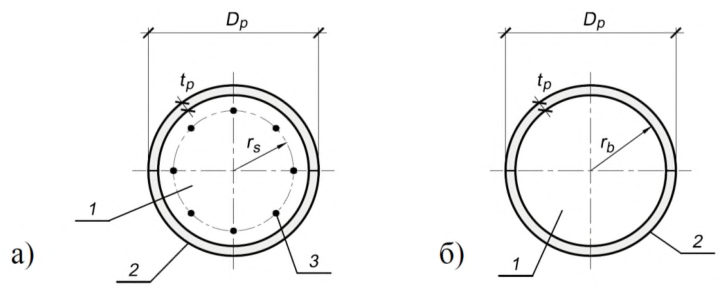
а) с бетонным ядром, армированным продольной гибкой арматурой (с железобетонным ядром); б) с бетонным ядром, неармированным продольной гибкой арматурой (с бетонным ядром)
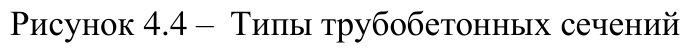
4.2Основные требования к конструкциям
- по безопасности;
- по эксплуатационной пригодности;
- по долговечности;
- дополнительным требованиям, указанным в задании на проектирование.
В сталежелезобетонных конструкциях допускается образование трещин, и к ним предъявляют требования по ограничению ширины раскрытия, соответствующие СП 63.13330. Образование трещин в сталежелезобетонных плитах с профилированным настилом допускается в зоне, закрытой профилированным настилом.
- к бетону и его составляющим;
- к арматуре;
- к стали;
- к расчетам конструкций;
- конструктивных;
- технологических;
- по эксплуатации.
Требования по нагрузкам и воздействиям, пределу огнестойкости, непроницаемости, морозостойкости, предельным показателям деформаций (прогибам, перемещениям, амплитуде колебаний), расчетным значениям температуры наружного воздуха и относительной влажности окружающей среды, по защите строительных конструкций от воздействия агрессивных сред и др. устанавливаются СП 14.13330, СП 20.13330, СП 22.13330, СП 28.13330, СП 44.13330, СП 122.13330, СП 131.13330.
- принимать конструктивные схемы, обеспечивающие прочность, устойчивость и пространственную неизменяемость зданий и сооружений в целом и их отдельных элементов;
- применять рациональные профили проката, эффективные стали и прогрессивные типы соединений; элементы конструкций должны иметь минимальные сечения, удовлетворяющие требованиям настоящего свода правил с учетом сортаментов на прокат и трубы;
- предусматривать технологичность и наименьшую трудоемкость изготовления, транспортирования и монтажа;
- учитывать производственные возможности и мощность технологического и кранового оборудования предприятий - изготовителей конструкций, монтажных организаций;
- учитывать допускаемые отклонения от проектных размеров и геометрической формы элементов конструкций при изготовлении и монтаже.
Нормативные значения нагрузок и воздействий, значения коэффициентов надежности по нагрузке, устанавливают в соответствии с СП 20.13330.
Расчетные значения нагрузок и воздействий принимают в зависимости от вида расчетного предельного состояния и расчетной ситуации.
- при воздействии средне- и сильноагрессивной среды по СП 28.13330;
- при динамических воздействиях с коэффициентом асимметрии цикла ρ < 0,7;
- при температуре выше плюс 40°С или ниже минус 50°С;
- при влажности более 60% без дополнительного защитного покрытия, обеспечивающего его коррозионную стойкость.
При расчете отдельной конструкции, она рассматривается без учета непрямых воздействий пожара, за исключением возникающих в результате температурных градиентов. Температурное воздействие следует предусматривать по ГОСТ 30247.0, если иное не установлено нормативными документами.
- развития и распределения температуры внутри конструктивных элементов (теплотехническая модель);
- статической работы конструкции или любой ее части (статическая модель).
4.3Основные положения по расчетам
В статически неопределимых конструкциях следует учитывать перераспределение усилий в элементах системы вследствие образования трещин и развития неупругих деформаций в бетоне, стали и арматуре вплоть до возникновения предельного состояния в элементе.
При расчете конструкций по прочности, деформациям, образованию и раскрытию трещин на основе метода конечных элементов должны быть проверены условия прочности и трещиностойкости, а также условия возникновения чрезмерных перемещений конструкции.
Расчеты по предельным состояниям первой группы включают проверку по:
- прочности;
- устойчивости формы (для тонкостенных конструкций);
- устойчивости положения (опрокидывание, скольжение).
Расчеты по предельным состояниям второй группы включают проверку по:
- образованию трещин;
- раскрытию трещин;
- деформациям.
- коэффициенты надежности по ответственности γn , принимаемые согласно ГОСТ 27751-2014 (раздел 10);
- коэффициенты надежности по материалу: по бетону γb , принимаемый согласно СП 63.13330.2012 (6.1.11); по арматуре γs , принимаемый согласно СП 63.13330.2012 (6.2.8); по стали γm , принимаемый согласно СП 16.13330.2011 (6.2);
- коэффициенты условий работы: элементов стальных конструкций и соединений γс , γс1 , γb , принимаемые по СП 16.13330.2011 (таблица 1, 7.1.2, таблица 45 и разделы 14-18 ); бетона γbi , принимаемый согласно СП 63.13330.2012 (6.1.12).
- γstab = 2 - при расчете по недеформированной схеме;
- γstab = 1,2 - при расчете по деформированной схеме с проверкой условия упругой работы стали и учете длительных деформаций бетона в соответствии с СП 63.13330.
4.4Требования к расчетам
4.4.1 Расчет по прочности
Расчеты по прочности компонентов сталежелезобетонных конструкций (конструкционные стальные элементы и железобетонные элементы) должны удовлетворять основным требованиям, предъявляемым к расчетам по прочности в СП 16.13330, СП 63.13330 и настоящем своде правил.
4.4.2 Расчет по образованию и раскрытию трещин
4.4.2.1 Расчеты по образованию и раскрытию трещин элементов сталежелезобетонных конструкций должны удовлетворять основным требованиям, предъявляемым к расчетам по трещиностойкости и трещинообразованию в СП 63.13330 и настоящем своде правил.
4.4.2.2 Расчет трубобетонных элементов по раскрытию трещин не проводится. Расчет по образованию трещин выполняется как вспомогательный в рамках расчета по деформациям.
4.4.3 Расчет по деформациям
4.4.3.1 Сталежелезобетонные элементы по деформациям рассчитывают из условия, по которому прогибы или перемещения конструкций f от действия внешней нагрузки не должны превышать предельно допустимых значений прогибов или перемещений f ult :
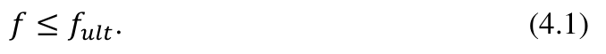
4.4.3.2 Прогибы или перемещения сталежелезобетонных конструкций определяют по общим правилам строительной механики в зависимости от изгибных, сдвиговых и осевых жесткостных характеристик элемента в различных сечениях по его длине.
4.4.3.3 Жесткость рассматриваемого сечения сталежелезобетонного элемента определяют по общим правилам сопротивления материалов как для условно упругого сплошного элемента (согласно приложению Г). При вычислении жесткости в случае наличия трещин в растянутой зоне бетона, растянутый бетон не учитывается, а его влияние на работу конструкции учитывается с помощью приведенного модуля деформации растянутой арматуры в соответствии с СП 63.13330. Допускается не учитывать влияние растянутого бетона с трещинами.
Кривизну и продольные деформации сталежелезобетонного элемента также определяют по нелинейной деформационной модели исходя из гипотезы плоских сечений, диаграмм деформирования бетона, арматуры и стали и средних деформаций арматуры между трещинами.
4.4.3.4 Деформации сталежелезобетонных элементов следует рассчитывать с учетом длительности действия нагрузок, устанавливаемых соответствующими нормативными документами.
При вычислении прогибов жесткость участков элемента следует определять с учетом наличия или отсутствия нормальных к продольной оси элемента трещин в растянутой зоне их сечения.
4.4.3.5 Значения предельно допустимых деформаций принимают в соответствии с указаниями СП 20.13330 и нормативных документов на отдельные виды конструкций. При действии постоянных и временных длительных и кратковременных нагрузок прогиб сталежелезобетонных элементов во всех случаях не должен превышать 1/150 пролета и 1/75 вылета консоли.
4.4.4 Дополнительные требования к расчету комбинированных балок
4.4.4.1 Расчеты следует выполнять исходя из гипотезы плоских сечений, без учета податливости швов объединения стальной и железобетонной частей.
Для сталежелезобетонных балок по прочности следует проверять расчетные поперечные сечения.
Расчетные поперечные сечения включают:
- сечения с максимальным изгибающим моментом;
- опоры;
- сечения, в которых приложены сосредоточенные нагрузки или реакции;
- сечения со скачкообразным изменением своих размеров, при которых отношение большего момента сопротивления к меньшему превышает 1,2;
- в элементах переменной высоты расчетные сечения выбирают таким образом, чтобы отношение большего значения несущей способности по изгибающему моменту к меньшему (при изгибе в одной плоскости) для любой пары смежных расчетных поперечных сечений не превышало 1,5;
- свободные концы консолей - для расчетов объединения железобетонной плиты со стальной конструкцией.
4.4.4.2 В расчетах сталежелезобетонных конструкций следует применять коэффициент приведения αb = Est /E b1 , где Est -модуль упругости конструкционного металла стальной части, Eb1 - модуль деформации бетона при сжатии и растяжении, определяемый по СП 63.13330 в зависимости от продолжительности действия нагрузки и с учетом наличия или отсутствия трещин.
4.4.4.3 При выполнении расчетов сталежелезобетонных конструкций следует учитывать неупругие деформации.
- для расчетов по прочности и устойчивости: для постоянных воздействий: ползучесть бетона и обжатие поперечных швов сборных железобетонных плит; для временных, температурных и усадочных воздействий: поперечные трещины в железобетоне (от всей совокупности действующих нагрузок) и ограниченные пластические деформации стали и бетона (от всей совокупности действующих нагрузок и только при проверке сечения).
- для расчетов по трещиностойкости:
СП 266.1325800.2016 для постоянных воздействий: ползучесть бетона и обжатие поперечных швов сборных железобетонных плит при расчетах по образованию и раскрытию трещин; для временных вертикальных, температурных и усадочных воздействий и для воздействий при транспортировании, монтаже, предварительном напряжении и регулировании: без учета неупругих деформаций при расчете по трещинообразованию и с учетом поперечных трещин в железобетоне от всей совокупности действующих нагрузок при расчете по образованию трещин.
4.4.4.4 Ползучесть бетона следует учитывать в соответствии с положениями СП 63.13330.
4.4.4.5 При расчетах на усадку бетона разгружающее влияние усадки не учитывается.
4.4.4.6 Железобетонные плиты следует рассчитывать по прочности и трещиностойкости. Категории требований по трещиностойкости и расчеты следует выполнять согласно СП 63.13330.
4.4.4.7 В статически неопределимых системах усилия следует определять с учетом влияния поперечных трещин в железобетонной плите.
4.4.4.8 Расчет поперечного сечения следует выполнять по стадиям, число которых определяется числом частей сечения, последовательно включаемых в работу. Для каждой части сечения действующие напряжения следует определять суммированием их по стадиям работы.
4.4.4.9 Учитываемую в составе сечения расчетную ширину железобетонной плиты bsl следует определять как сумму расчетных величин свесов плиты в обе стороны от оси стальной конструкции (рисунок 4.5). Расчетное значение свеса плиты следует определять пространственным расчетом методом конечных элементов, допускается принимать его значение в соответствии с таблицей 4.1.
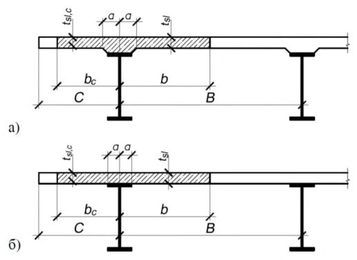
Рисунок 4.5 - Схема для определения расчетной ширины железобетонной плиты
Таблица 4.1
| Положение свеса плиты относительно стальной части, его обозначение | Пролет плиты l | Расчетная величина свеса плиты |
|---|---|---|
| Свес в сторону соседнего стального элемента b | Свыше 4 В Менее 4 В | В /2 a + 6 t sl , но не более В /2 и не менее l /8 |
| Свес в сторону консоли b c | Свыше 12 С Менее 12 С | C a +6 t sl,c , но не более C и не менее l /12 |
| Обозначения: а - половина ширины железобетонного ребра или вута, а при их отсутствии - половина ширины контакта железобетонной плиты и | Обозначения: а - половина ширины железобетонного ребра или вута, а при их отсутствии - половина ширины контакта железобетонной плиты и | Обозначения: а - половина ширины железобетонного ребра или вута, а при их отсутствии - половина ширины контакта железобетонной плиты и |
| t sl , t sl,c l B C - - - - стального пояса; средняя толщина железобетонной плиты соответственно в пролете и на консоли (за вычетом ребра или вута); пролет ребра плиты (стальной балки); расстояние между осями стальных балок (см. рисунок 4.5); консольный свес плиты от оси стальной конструкции (см. рисунок | t sl , t sl,c l B C - - - - стального пояса; средняя толщина железобетонной плиты соответственно в пролете и на консоли (за вычетом ребра или вута); пролет ребра плиты (стальной балки); расстояние между осями стальных балок (см. рисунок 4.5); консольный свес плиты от оси стальной конструкции (см. рисунок | t sl , t sl,c l B C - - - - стального пояса; средняя толщина железобетонной плиты соответственно в пролете и на консоли (за вычетом ребра или вута); пролет ребра плиты (стальной балки); расстояние между осями стальных балок (см. рисунок 4.5); консольный свес плиты от оси стальной конструкции (см. рисунок |
4.4.4.10 Площадь поперечного сечения железобетонной плиты Ab , ее толщину t sl и ширину ребра или вута следует принимать поделенными на коэффициент приведения αb согласно 4.4.4.2 настоящего свода правил. При учете неупругих деформаций допускается применять коэффициенты приведения, найденные по условным модулям упругости бетона.
Площадь продольной арматуры, имеющей сцепление с бетоном, следует принимать поделенной на коэффициент приведения αs = Est /E s , где Es -модуль упругости арматуры, принимаемый согласно СП 63.13330.
4.4.4.11 Центры тяжести стального и приведенного сечений следует определять по сечению брутто.
4.4.4.12 Прочность и устойчивость стальных балок при монтаже проверяют согласно СП 16.13330.
Прочность и трещиностойкость конструкций и их элементов при предварительном напряжении, транспортировании и монтаже следует проверять в предположении упругой работы стали и бетона. Проверку следует осуществлять без учета ползучести, усадки бетона и обжатия поперечных швов, но с учетом влияния потерь предварительного напряжения согласно СП 63.13330.
4.4.4.13 При учете ползучести бетона в статически определимых конструкциях следует выполнять расчеты в соответствии с СП 63.13330.
4.4.4.14 При учете ползучести бетона в статически неопределимых конструкциях следует определять внутренние силовые факторы, а также соответствующие деформации. Внутренние силовые факторы допускается вычислять методом конечных элементов.
4.4.4.15 Прочность узловых и стыковых сопряжений сборных железобетонных элементов между собой и со стальными элементами должна быть подтверждена расчетом.
4.4.5 Дополнительные требования к расчету трубобетонных элементов
4.4.5.1 Расчет по прочности трубобетонных элементов выполняют с учетом следующих особенностей работы этого вида конструкций:
- бетон и металл трубы работают в многоосном напряженном состоянии. Это приводит к изменению их расчетных сопротивлений, учитываемых в расчете;
- при действии продольных сжимающих сил, бетон ядра испытывает сжатие как в продольном направлении, так и в боковых направлениях со стороны трубы. Это приводит к повышению его расчетного сопротивления по сравнению с одноосным напряженным состоянием;
- при действии продольных сжимающих сил, металл трубы испытывает сжатие в продольном направлении и растяжение в поперечном (тангенциальном) направлении из-за давления бетона. Это приводит к снижению его расчетного сопротивления по сравнению с одноосным напряженным состоянием;
- с увеличением эксцентриситета приложения продольной нагрузки расчетные сопротивления материалов уменьшаются. При приложении продольной сжимающей силы (сжато-изогнутые элементы рассматриваются как внецентренно-сжатые) за пределами ядра сечения бетонной части (более 0,25r b ) или при действии только изгибающего момента, расчетные сопротивления материалов принимаются как при одноосном напряженном состоянии.
4.4.5.2 Расчет трубобетонных элементов по прочности выполняют:
- по нормальным сечениям на действие изгибающих моментов и продольных сил, по предельным усилиям или по нелинейной деформационной модели;
- на действие поперечных сил и крутящих моментов по предельным усилиям.
4.4.5.3 Расчет трубобетонных элементов на действие поперечной силы, изгибающего и крутящего моментов выполняют: по прочности наклонного бетонного сечения на действие поперечной силы, по прочности трубы на действие поперечной силы, на действие изгибающего момента и на действие крутящего момента. Прочность сечения определяется большим из двух значений - прочностью бетонного (железобетонного) ядра или прочностью трубы.
5Материалы
5.1Бетон
- тяжелый средней плотности от 2200 до 2500 кг/м³ включительно;
- мелкозернистый средней плотности от 1800 до 2200 кг/м³ ;
- напрягающий.
5.2Арматура
5.3Сталь
5.4Стальные листовые профили
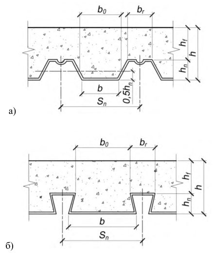
- а) стальной профилированный настил с гофром открытого типа;
- б ) стальной профилированный настил с гофром закрытого типа
Рисунок 5.1 - Геометрические параметры монолитной железобетонной плиты и профилированного настила
6Расчет сталежелезобетонных конструкций, подверженных изгибу
6.1Расчет сталежелезобетонных плит с профилированным настилом
6.1.1 Расчет плиты на стадии бетонирования
6.1.1.1 Нагрузки на настил на стадии бетонирования
На стадии бетонирования плиты стальной профилированный настил выполняет функции опалубки и является несущей конструкцией, работающей на поперечный изгиб.
До набора свежеуложенным бетоном плиты кубиковой прочности равной 10 МПа настил следует рассчитывать на прочность и жесткость как стальной тонкостенный изгибаемый элемент, работающий на нагрузки, приведенные в таблице 6.1.
Нормативная нагрузка qb от собственного веса свежеуложенной бетонной смеси определяется по формуле (6.1) с учетом приведенной толщины бетона hb в пределах высоты сечения настила
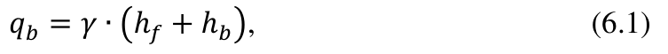
где γ - удельный вес бетонной смеси; hf - толщина бетона над верхними полками настила; hb - приведенная толщина бетона в пределах высоты сечения настила, определяемая по формуле
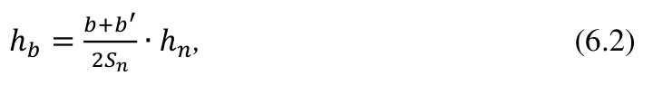
b, b ′ , S n, hn - показаны на рисунке 6.1.
Таблица 6.1
| Характеристика | Нормативная нагрузка, кПа | Коэффициент надежности по нагрузке γ f |
| Нагрузка от собственного веса настила | по НД | 1,05 |
|---|---|---|
| Нагрузка от веса свежеуложенной бетонной смеси | по приведенному сечению плиты | 1,2 |
| Монтажная нагрузка: | ||
| при выгрузке бетонной смеси из бадей вместимостью до 0,8 м³ | 2,5 | 1,3 |
| при подаче бетонной смеси бетоноводами равномерно в пределах настила | 0,5 | 1,3 |
При прогибе настила более 1/10 высоты сечения плиты следует учитывать дополнительную нагрузку от собственного веса Δ qb свежеуложенного бетона, определяемую по формуле
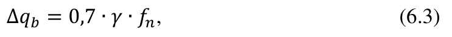
где f n - прогиб настила от нормативной нагрузки qb .
Рисунок 6.1 - К определению приведенной толщины бетона в пределах высоты сечения настила
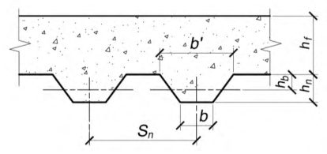
6.1.1.2 Расчетные характеристики профилей настила
Приведенные геометрические характеристики сечения профилей настила (моменты инерции и сопротивления) для его расчета на стадии бетонирования плиты должны определяться с учетом следующих допущений:
- форма поперечного сечения гофров при действии нагрузки не изменяется;
- гофры настила работают как тонкостенные балки трапециевидного сечения в упругой стадии;
- нормальные напряжения по высоте поперечного сечения стенок гофров распределяются линейно;
- нормальные напряжения по ширине продольно сжатых полок до местной потери устойчивости, а также по ширине растянутых полок распределяются равномерно;
- после местной потери устойчивости продольно сжатых полок нормальные напряжения в них распределяются неравномерно, возрастая от середины полок к продольным краям. При расчете приведенных характеристик профиля после местной потери устойчивости продольно сжатых полок должна учитываться редукция участков профиля и снижение рабочей площади сечения профиля в целом.
Расчетные геометрические характеристики редуцированного поперечного сечения профиля настила и масса 1 м² настила приводятся в нормативных документах (НД), разработанных и утвержденных в установленном порядке с участием предприятия-изготовителя профилированных стальных листов.
6.1.1.3 Расчет настила на прочность
На стадии бетонирования плиты прочность стального профилированного настила в надопорных и пролетных сечениях проверяют по формуле
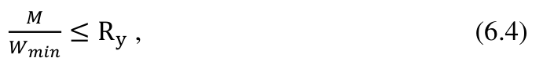
где M - изгибающий момент от расчетных нагрузок;
Wmin - минимальный расчетный момент сопротивления профиля настила по на профилированные листы.
6.1.1.4 Расчет на устойчивость стенок гофров на опорах
Проверка устойчивости стенок трапециевидных гофров настила при укладке бетонной смеси проверяется по формуле
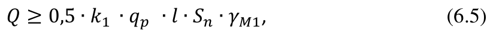
где Q - поперечная критическая сила на одну стенку гофра, соответствующая потере ее местной устойчивости; k1 -коэффициент, зависящий от значения опорной реакции, определяемый в зависимости от схемы раскладки настила на опоры и принимаемый равным:
- 0,5 для однопролетного настила;
- 1,25 для двухпролетного настила;
- 1,2 для трехпролетного настила;
- 1,223 для четырехпролетного настила;
- 1,218 для настила с числом пролетов пять и более; qp - расчетная равномерно распределенная нагрузка на настил (таблица 6.1); l - длина пролета гофров настила;
Sn - шаг гофров настила; γM1 - коэффициент условия работы стенок гофров настила равный:
1,25 - для настила на промежуточной опоре;
1,05 - для настила на крайней опоре.
Поперечная критическая сила на промежуточной опоре неразрезного настила, соответствующая потере местной устойчивости одной из стенок его гофра, определяется по формуле
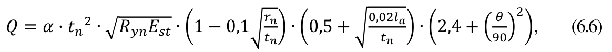
где α = 0,15 - коэффициент для промежуточных опор; tn - толщина стенки настила;
Ryn - предел текучести стали ;
Est - модуль упругости стали; r n - радиус гиба в гофрах; la - расчетная ширина опоры настила; θ - угол наклона стенки гофра в градусах.
6.1.1.5 Расчет прогиба настила
Максимальный прогиб профилированного настила нормативных нагрузок f n не должен превышать 1/200 пролета:
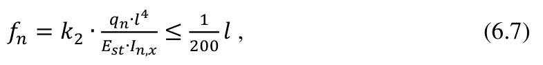
где k2 - коэффициент, определяемый в зависимости от схемы раскладки настила и принимаемый равным:
0,013 для однопролетного настила;
0,0091 для двухпролетного настила;
0,0088 для настила с числом пролетов три и более; qn - нормативная равномерно-распределенная нагрузка на настил;
I n,x - момент инерции сечения профиля на 1 м ширины настила (по НД на профилированные листы).
6.1.2 Расчет плиты на стадии эксплуатации
6.1.2.1 Общие положения
На стадии эксплуатации плита рассчитывается как железобетонная конструкция с внешней рабочей арматурой из стального профилированного настила и с гибкой стержневой арматурой.
Неразрезная железобетонная плита, армированная профилированным настилом, при отсутствии расчетной гибкой арматуры над опорами, рассчитывается как однопролетная конструкция. При этом опорные моменты, воспринимаемые настилом на промежуточных опорах, учитываются как внешняя нагрузка без учета работы бетона (рисунок 6.2).
При установке над опорами плиты расчетной стержневой арматуры, усилия в плите определяются как в неразрезной железобетонной конструкции согласно СП 63.13330, допускающей перераспределение моментов в соответствии с требованиями трещиностойкости.
Рисунок 6.2 - Расчетная схема плиты при отсутствии гибкой арматуры в надопорной зоне
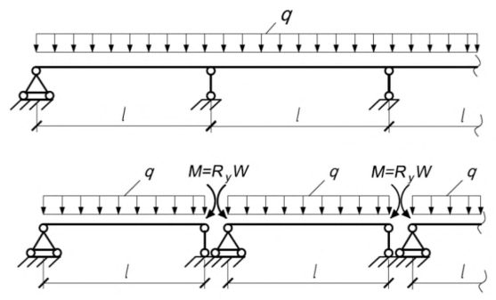
Расчет по первой группе предельных состояний включает проверку по трем критериям прочности:
- по нормальным сечениям (при условии обеспечения сцепления настила с бетоном);
- по наклонным сечениям;
- по условию обеспечения сцепления настила с бетоном.
Расчет по второй группе предельных состояний включает:
- расчет на образование и раскрытие нормальных и наклонных трещин;
- определение прогиба плиты (при условии обеспечения сцепления настила с бетоном).
6.1.2.2 Расчет прочности плиты по нормальным сечениям
Расчет прочности плиты по нормальным сечениям выполняется при следующих допущениях:
- сопротивление растяжению бетона равно нулю;
- напряжения в настиле равномерно распределены по высоте и не превышают расчетное сопротивление листовой стали Ry ;
- коэффициент условия работы γс принимается в зависимости от типа настила по результатам испытаний (приложение В).
Значение граничной относительной высоты сжатой зоны сечения ξR определяют в соответствии с СП 63.13330 по формуле
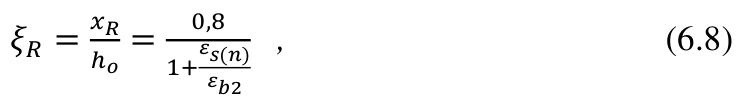
где εb2 - относительная деформация сжатого бетона при напряжениях, равных , принимаемая в соответствии с указаниями СП 63.13330.2012 (6.1.20).
Rb εs(n) - относительная деформации растянутого стального элемента.
Значение εs(n) принимается максимальным из значений относительной деформации растянутой арматуры εs.el при напряжениях, равных Rs , , определяемого в соответствии с требованиями СП 63.13330.2012 (8.1.6), и относительной деформации растянутого стального настила εn при напряжениях, равных Ry , определяемого в соответствии с приложением Д.
Для тяжелого бетона классов В70 - В100 и для мелкозернистого бетона в числителе формулы (6.8) вместо 0,8 следует принимать 0,7.
При отсутствии рабочей растянутой арматуры в плите для определения граничной относительной высоты сжатой зоны сечения по формуле (6.8) вместо εs.el следует использовать относительную деформацию настила при растяжении εn при напряжениях равных Ry .
При подборе сечений плиты высота ее сжатой зоны x должна удовлетворять условию
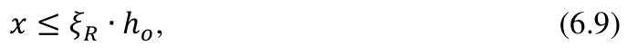
где ho - высота рабочего сечения плиты.
Если это условие не соблюдается, то следует увеличить толщину плиты, повысить класс бетона по прочности на сжатие, расположить в сжатой зоне дополнительную стержневую арматуру с тем, чтобы высота сжатой зоны не превышала граничную.
В зависимости от положения нейтральной оси в сечении плиты в пролете возможны три случая расчета на прочность.
Случай 1 . Нейтральная ось находится в пределах толщины полки плиты и не пересекает стенок профилированного настила (рисунок 6.3).
Высоту сжатой зоны сечения плиты определяют из условия
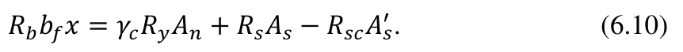
При расчете прочности плиты должно выполняться условие
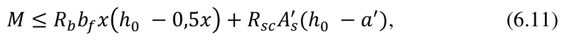
где An -площадь поперечного сечения одного гофра настила;
As - площадь поперечного сечения стержневой растянутой арматуры;
As ′ - площадь поперечного сечения стержневой сжатой арматуры;
Rsc - расчетное сопротивление сжатию стержневой сжатой арматуры;
M - изгибающий момент в рассматриваемом сечении плиты; x - высота сжатой зоны бетона; bf - ширина верхней части расчетного сечения; a ′ - защитный слой сжатой стержневой арматуры; h0 - высота рабочего сечения плиты, принимается как расстояние от крайней сжатой грани плиты до точки приложения равнодействующей растягивающих усилий в настиле и гибкой арматуре; γc - коэффициент условия работы, принимаемый равным:
0,4 для профилированных настилов без выштамповок на стенках гофров с двумя упорами в каждом гофре;
0,6 - для профилированных настилов с зигзагообразной выштамповкой на стенках гофров;
0,8 - то же, с одним упором в каждом гофре.
Коэффициент условия работы γc для других типов настила следует определять экспериментальным путем с применением стандартных методик испытаний (приложение В).
Рисунок 6.3 - Схема усилий в пролетном сечении плиты при расположении нейтральной оси в пределах толщины полки плиты
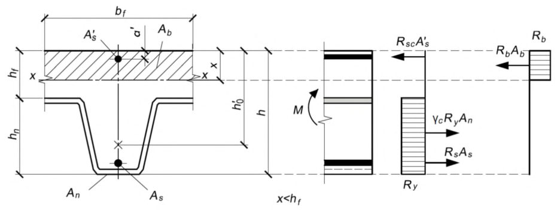
Случай 2 . Нейтральная ось пересекает стенки профилированного настила (рисунок 6.4).
Высоту сжатой зоны сечения плиты определяют из условия
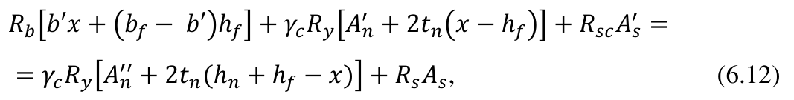
где An ′ - площадь сечения верхней полки одного гофра настила;
An ′′ - площадь сечения нижней полки одного гофра настила; b′ - ширина бетонного ребра (рисунок 6.4); tn - толщина профилированного настила (рисунок 6.4);
Ant -площадь поперечного сечения растянутой зоны стенки одного гофра настила.
Рисунок 6.4- Схема усилий в пролетном сечении плиты при расположении нейтральной оси в пределах стенки гофра профилированного настила
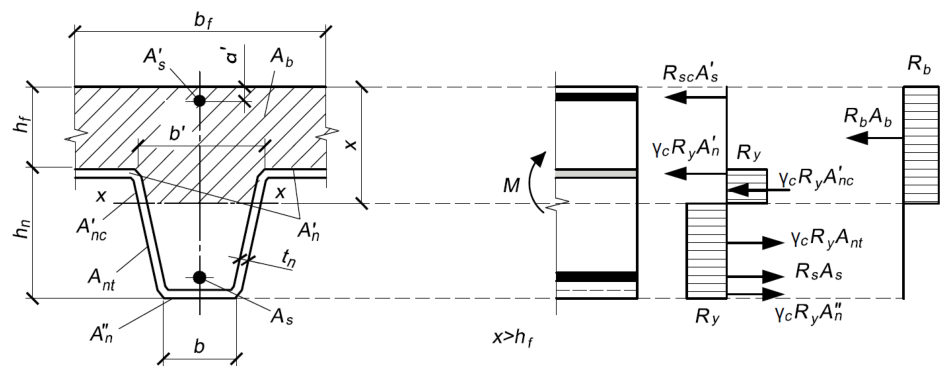
При расчете прочности сечения плиты должно соблюдаться условие
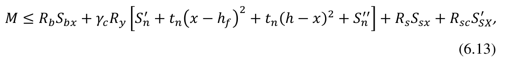
где Sbx - статический момент площади сечения сжатого бетона относительно оси x -x ;
An ′ - площадь сечения верхней полки одного гофра настила;
Sn ′ -статический момент площади верхней полки профилированного настила относительно оси x -x ;
Sn ′′ -статический момент площади нижней полки профилированного настила относительно x -x ;
Ssx , S sx ′ - статические моменты площади соответственно растянутой и сжатой стержневой арматуры относительно x -x .
Случай 3 . Нейтральная ось находится на уровне верхней полки профилированного настила, x = hf (рисунок 6.5).
При расчете прочности сечения плиты должно соблюдаться условие
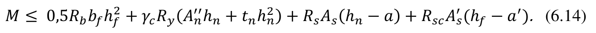
Рисунок 6.5 - Схема усилий в пролетном сечении плиты при расположении нейтральной оси на уровне верхней полки профилированного настила
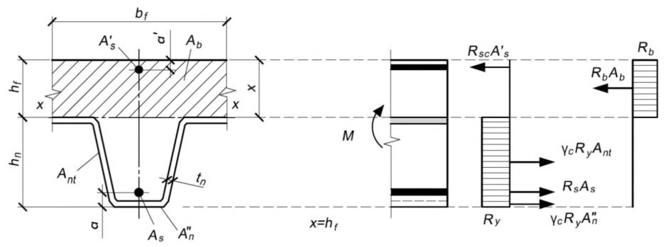
Если при определении высоты сжатой зоны по формуле (6.10) выполняется условие x > hf , а по формуле (6.12) x < hf , то прочность нормального сечения плиты проверяется для случая 3.
Расчет прочности нормальных сечений плиты на ее промежуточных опорах выполняется только в случаях установки расчетной надопорной стержневой арматуры, обеспечивающей неразрезность конструкции.
Прочность нормальных сечений плиты определяется по СП 63.13330 как для сечений железобетонных элементов со стержневой арматурой. Сжатый профилированный лист из-за опасности выпучивания в расчете не учитывается.
В зависимости от положения нейтральной оси в сечении плиты на опоре возможны два случая расчета на прочность:
Случай А. Нейтральная ось пересекает стенки профилированного настила (рисунок 6.6).
Высоту сжатой зоны сечения плиты определяют из условия
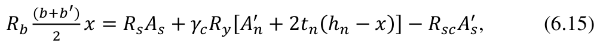
где An ′ - площадь сечения верхней полки одного гофра настила.
При расчете прочности сечения плиты должно соблюдаться условие
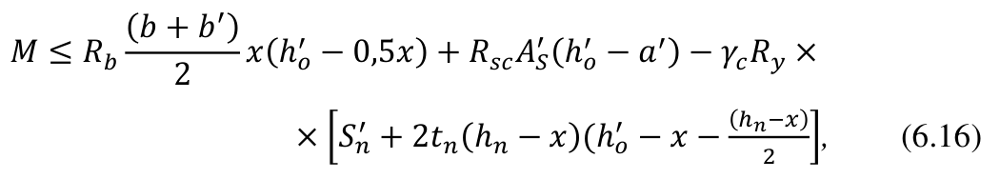
где M - изгибающий момент в рассматриваемом сечении плиты; ho ′ - расстояние от нижней полки стального профилированного листа до точки приложения растягивающих усилий в стержневой растянутой арматуре;
Sn ′ - статический момент площади верхней полки профилированного настила относительно оси x -x .
Рисунок 6.6- Схема усилий в опорном сечении плиты при расположении нейтральной оси в пределах стенки гофра профилированного настила
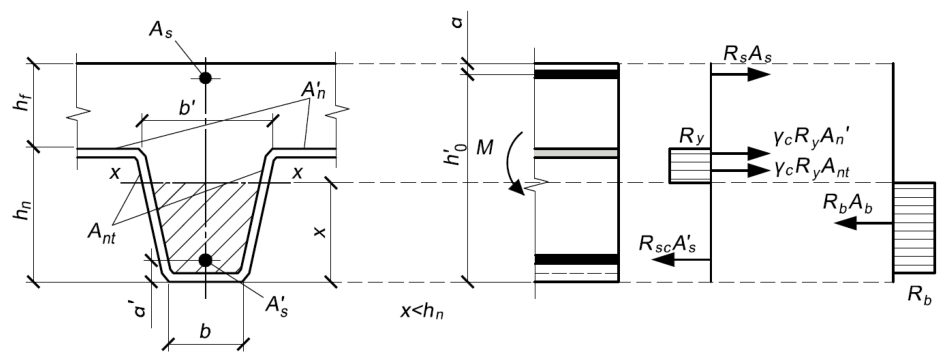
Случай Б. Нейтральная ось находится на уровне верхней полки профилированного настила, x = hn (рисунок 6.7).
При расчете прочности сечения плиты должно соблюдаться условие
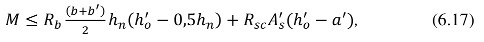
При положении нейтральной оси выше высоты профилированного листа ( x > hn ) часть сжатой зоны бетона , расположенная над полкой профилированного листа, не учитывается. Прочность нормального сечения плиты над опорой проверяется как для случая Б.
Рисунок 6.7 - Схема усилий в опорном сечении плиты при расположении нейтральной оси на уровне верхней полки профилированного настила
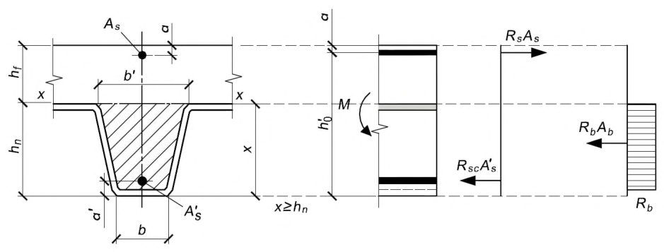
6.1.2.3 Расчет прочности плиты по наклонным сечениям
Расчет прочности плиты по наклонным сечениям выполняется на действие поперечной силы, а угол α наклонной трещины принимается не менее 45° к горизонтальной оси (рисунок 6.8). При этом должны соблюдаться условия:
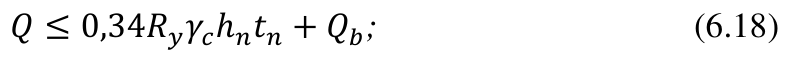
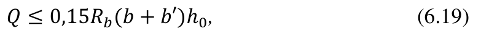
где 0,34Ryγ chntn - поперечное усилие, воспринимаемое стенками настила в одном гофре;
Qb - поперечное усилие, воспринимаемое бетоном.
Поперечное усилие Qb , воспринимаемое бетоном в наклонном сечении, определяют по формуле
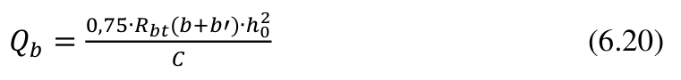
при условии, что
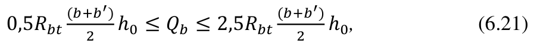
где C - длина проекции наклонного сечения; b и b ′ -- ширина бетонного ребра (рисунок 6.1).
Рисунок 6.8 - Схема усилий в наклонном сечении при расчете его прочности на действие поперечной силы
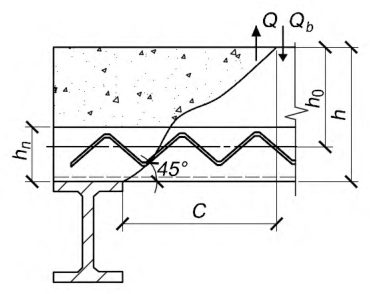
6.1.2.4 Проверка прочности сцепления настила с бетоном
Расчет прочности сцепления настила с бетоном определяют для крайних пролетов плиты, считая от концов элементов настила на свободных опорах.
Сцепление настила с бетоном проверяют для нормального сечения плиты в месте наибольшего изгибающего момента, в четверти пролета и в местах приложения сосредоточенных нагрузок. При этом должно соблюдаться условие
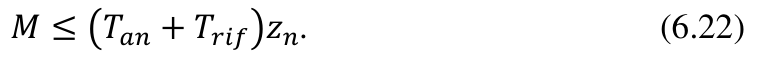
Если по расчету плиты, кроме арматуры в виде настила необходимо предусмотреть дополнительную стержневую арматуру, сцепление рабочей арматуры плиты проверяют по формуле
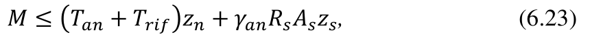
где M - расчетный изгибающий момент от действия внешних сил на ширину одного гофра настила;
Tan - сопротивление анкерных упоров сдвигу бетона по концам настила;
Trif - сопротивление рифов, расположенных на стенках настила, сдвигу относительно бетона; zn, z s - расстояния от равнодействующей усилия сжатия в сечении плиты до равнодействующей усилия растяжения в сечении настила и стержневой арматуре соответственно (рисунок 6.9); γan - коэффициент условий работы анкеровки стержневой арматуры; γan = 1 при L - h ≥ l0 (рисунок 6.10);
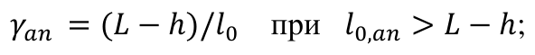
l 0,an -базовая длина анкеровки стержневой арматуры определяется согласно СП 63.13330.2012 (10.3.24).
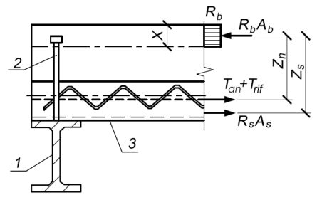
1 - прогон; 2 - анкер; 3 - стальной профилированный настил Рисунок 6.9 - Схема усилий при расчете по прочности анкеровки
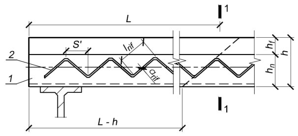
1 - стальной профилированный настил; 2 - выштампованные рифы; 1-1 - сечение по пролету настила в месте наибольшего изгибающего момента, в четверти пролета, в местах приложения сосредоточенных сил; L - длина участка расположения рифов на стенках настила, учитываемых в расчете его анкеровки по формуле (6.23)
Рисунок 6.10 - Схема расположения расчетного сечения для проверки сцепления настила с бетоном
Расчетное значение Tan принимается меньшим из полученных значений следующих двух величин: сопротивление сдвигу анкеров в виде стад-болтов по концам настила определяется по формуле
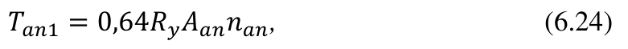
где Aan - площадь поперечного сечения стад-болта; nan - число стад-болтов в одной нижней полке настила;
Ry - расчетное сопротивление стали стад-болта; сопротивление анкеровки сдвигу с учетом скалывания бетона относительно стад-болтов определяется по формуле
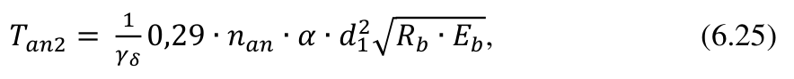
где d1 - диаметр стержня стад-болта;
Eb -начальный модуль упругости бетона.
Коэффициент α равен:
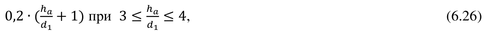
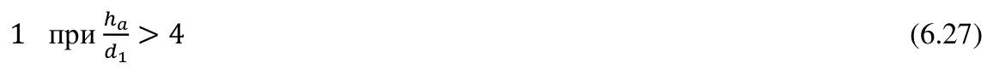
Здесь ha - длина стад-болта; γδ - коэффициент условия работы анкера (среднее значение γδ для стад болта следует принимать равным 1,25).
Сопротивление рифов настила на смятие при его сдвиге относительно бетона определяется по формуле
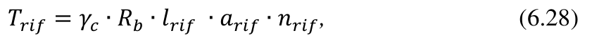
где γc - коэффициент условия работы настила (см. 6.2.1); l rif - длина одного рифа; arif - глубина выдавливания одного рифа. nrif - число рифов на стенках одного гофра по длине участка настила L от рассматриваемого сечения до ближайшей опоры настила (рисунок 6.10).
При наличии в ребрах плиты стержневой арматуры число вводимых в расчет рифов принимается на длине участка плиты, уменьшенной на высоту ее сечения.
Прочность анкеров должна быть обеспечена в соответствии с 9.1.2.
6.1.2.5 Расчет ребра плиты на опорах
Ребра плиты на опорах должны рассчитываться на смятие. При этом должно быть выполнено следующее условие
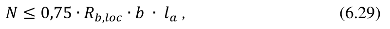
где N - опорная реакция на один гофр настила; b - ширина нижней полки настила; la -ширина опоры плиты.
6.1.2.6 Расчет плиты на образование и раскрытие трещин в растянутой зоне бетона
Расчет плиты на образование и раскрытие трещин в растянутой зоне бетона в пролете (на поверхности, закрытой профилированным настилом) не проводится. Для верхней поверхности бетона над промежуточными опорами неразрезной плиты расчет по трещиностойкости выполняется с учетом категории трещиностойкости по СП 63.13330 в зависимости от условий эксплуатации.
Расчет монолитной неразрезной плиты на раскрытие трещин над промежуточными опорами выполняется как для железобетонного изгибаемого элемента с обычным армированием без учета профилированного настила в соответствии с требованиями СП 63.13330.
Предельно допустимое значение ширины раскрытия трещин следует принимать не более 0,3 мм.
6.1.2.7 Расчет прогиба плиты
Прогиб плиты рассчитывают по формуле
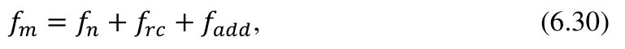
где f n - максимальный прогиб настила от нормативных нагрузок на стадии укладки бетонной смеси; f rc - прогиб плиты от действия постоянной и временной нагрузок на стадии эксплуатации с учетом ее расчетной кривизны; f add - дополнительный прогиб плиты за счет податливости анкерных связей.
При наличии расчетной надопорной гибкой арматуры расчет прогиба плиты выполняется как для неразрезной конструкции.
Прогиб f m не должен превышать предельных прогибов конструкций, устанавливаемых в СП 20.13330 для конструкций соответствующих видов, а также не должен превышать 1/150 значения пролета плиты.
При отсутствии расчетной надопорной стержневой арматуры прогиб плиты определяется как для однопролетной, свободно опертой конструкции по формуле
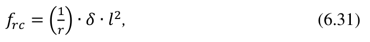
где 1 r - расчетная кривизна плиты на участке с наибольшим изгибающим моментом; δ - коэффициент по таблице 6.2; l - пролет плиты.
Дополнительный f add прогиб следует определять как для однопролетной балки с моментами на опорах по формуле (6.31), принимая коэффициент δ = 0,125 .
Расчетная кривизна плиты определяется в соответствии с СП 63.13330 по формуле
где Mn - изгибающий момент от нормативной нагрузки;
D - изгибная жесткость приведенного сечения плиты, приведенная в Г.1 (приложения Г).
Таблица 6 . 2
| Схема приложения нагрузки | δ |
|---|---|
| 1 12 |
| 1 8 - a 2 6 ∙ l 2 | 1 8 - a 2 6 ∙ l 2 |
|---|---|
| 1 8 | 1 8 |
| 5 48 | 5 48 |
Если при определении прогиба учитываются кратковременные и длительные нагрузки, то расчетная кривизна принимается равной сумме кривизн, определяемых раздельно для изгиба оси от нагрузок кратковременного и длительного действия:
Дополнительную кривизну, обусловленную податливостью анкерных связей, определяют по формуле
где k ′ = 2 - для однопролетных плит; k ′ = 1,5 и 1,0 - для крайних и средних пролетов неразрезных плит соответственно;
∆ - сдвиг настила относительно бетона, определяемый по формуле
где εa - коэффициент жесткости стержневого анкера:
здесь nan - число анкерных стержней в одном гофре.
Положение центра тяжести приведенного сечения плит, занимаемое относительно сжатой грани бетона ycm = xm , следует определять по следующим формулам:
- если нейтральная ось, на которой находится центр тяжести приведенного сечения, не пересекает ребро плиты и профилированный настил, то положение этой оси определяется по формуле
где xm - средняя высота сжатой зоны бетона, учитывающая влияние работы растянутого бетона между трещинами;
∑Ared - сумма приведенных площадей сечения арматуры, определение которой приведено в Г.1 (приложения Г);
Sred - статический момент площади Ared относительно сжатой грани плиты;
- если нейтральная ось пересекает ребро плиты и профилированный настил, то:
где A′red -сумма приведенных площадей сечений арматуры и площади свесов таврового сечения бетона плиты, определение которой приведено в Г.1 (приложения Г);
S′ red -статический момент площади A′red относительно сжатой грани плиты.
- если нейтральная ось располагается на уровне верхней полки профилированного настила, то xm = hf .
6.2Расчет комбинированных балок
6.2.1 Расчет по прочности на действие изгибающих моментов
6.2.1.1 Расчеты по прочности нормальных сталежелезобетонных поперечных сечений выполняются для расчетных поперечных сечений (4.4.4.1).
Расчет по прочности нормальных сталежелезобетонных поперечных сечений следует проводить с учетом нелинейных свойств материалов.
При расчете принимается, что сталежелезобетонное поперечное сечение остается плоским.
Напряжения в сжатом бетоне следует определять по нелинейной деформационной модели, согласно СП 63.13330.2012 (8.1.20 - 8.1.30).
Напряжения в арматуре следует определять по диаграммам, приведенным в СП 63.13330.
Напряжения в конструкционной стали при сжатии или растяжении следует определять по СП 16.13330, и учитывать влияние метода возведения (например, с применением временных опор или без них).
При действии усилий в плоскости симметрии нормальных сечений c арматурой, расположенной у граней сечения перпендикулярных к плоскости изгиба допускается производить расчет на основе предельных усилий согласно 6.2.1.2 - 6.2.1.8.
6.2.1.2 Расчет сечений сталежелезобетонной балки на воздействие положительного изгибающего момента (вызывающего в верхнем поясе сжатие) в зависимости от значения напряжения в бетоне σb на уровне центра тяжести железобетонной плиты и напряжения в продольной арматуре σs , соответствующего деформации бетона при напряжении σb , допускается выполнять по 6.2.1.3 - 6.2.1.6.
6.2.1.3 В случае, если напряжения в бетоне и расчетной продольной арматуре удовлетворяют условиям (рисунок 6.11):
для верхнего и нижнего поясов стального сечения должны выполняться соответственно следующие условия:
где M = M1 + M2 - полный изгибающий момент (принимают так же, как и 1 M и M с соответствующим знаком);
M1 - изгибающий момент первой стадии работы (нагрузку воспринимает стальная часть конструкции);
M2 - изгибающий момент второй стадии работы (нагрузку воспринимает сталежелезобетонная конструкция), определяемый для статически неопределимых систем с учетом ползучести бетона, обжатия поперечных швов, образования поперечных трещин в растянутых зонах железобетонной плиты, а также усадки бетона и изменений температуры; N = Nb,s = Abσb +Asσs - нормальная сила; σbi , σ si - уравновешенные в поперечном сталежелезобетонном сечении напряжения, возникающие на уровне центра тяжести поперечного сечения бетона от его ползучести, обжатия поперечных швов сборной плиты, усадки бетона и изменений температуры;
Ast = Af1,st +Af2,st +Aw,st - площадь нетто поперечного сечения стальной балки;
Af1,st , A f2,st , A w,st , A b , A s -площади элементов поперечного сечения нижнего и верхнего поясов, стенки стальной балки, бетона плиты, продольной арматуры плиты, соответственно;
Wb,red = I red Zb,red , W f1,st = I st Zf1,st , W f2,st = I st Zf2,st - моменты сопротивления;
I red , I st - моменты инерции нетто сталежелезобетонного поперечного сечения балки, приведенного к стали, и поперечного сечения стальной балки, соответственно;
Zb,red , Z b,st , Z f1,st , Z f2,st - расстояния согласно рисунку 6.11; αs = Est /E s - коэффициент приведения, принимаемый по 4.4.4.10; αb - коэффициент приведения, принимаемый по 4.4.4.2;
Ry, R b , R s = Rsc -расчетные сопротивления материала стальной конструкции, бетона и арматуры соответственно; γc , γbi и γsi - коэффициенты, принимаемые согласно 4.3.5;
пояса, учитывающий его разгрузку прилегающим бетоном и принимаемый не более 1,2.
Примечание - Нормальную силу N следует принимать растягивающей стальную балку при сжимающих напряжениях в железобетонной плите и сжимающей стальную балку при растягивающих напряжениях в железобетонной плите и арматуре (в формулы силу N в обоих случаях следует подставлять со знаком «плюс»). а) плита с вутами; б) плита без вутов
Рисунок 6.11 - Усилия и напряжения в поперечном сечении комбинированной балки, воспринимающем положительный изгибающий момент, при выполнении условий 6.2.1.3
6.2.1.4 В случае, если напряжения в бетоне и расчетной продольной арматуре удовлетворяют условиям (рисунок 6.12)
для верхнего и нижнего поясов стального сечения должны выполняться соответственно следующие условия:
где N = NbR,sR = AbRb + AsRs -нормальная сила при проверке верхнего пояса; N = NbR,s = AbRb + Asσs -нормальная сила при проверке нижнего пояса (примечание к 6.2.1.3).
Zb,red , Z b,st , Z f1,st , Z f2,st - расстояния согласно рисунку 6.12; а) плита с вутами; б) плита без вутов
Рисунок 6.12 - Усилия и напряжения в поперечном сечении комбинированной балки, воспринимающем положительный изгибающий момент, при выполнении условий 6.2.1.4
6.2.1.5 В случае, если напряжения в бетоне и расчетной продольной арматуре удовлетворяют условиям (рисунок 6.13)
для верхнего и нижнего поясов стального сечения должны выполняться соответственно следующие условия:
а для железобетонной части сечения условие
где NbR,sR = AbRb + AsRs - нормальная сила (примечание к 6.2.1.3);
Zb,red , Z b,st , Z f1,st , Z f2,st - расстояния согласно рисунку 6.13;
Wb,st = I st Zb,st - условный момент сопротивления на уровне центра тяжести сечения бетона;
0,0016 ,lim = b ε -предельная (для сталежелезобетонных конструкций) относительная деформация бетона на уровне центра тяжести его поперечного сечения; k - коэффициент, учитывающий увеличение относительных деформаций бетона при развитии пластических деформаций:
- если σ0 ≤ γ cRy , то k = 1,0 ;
определяют интерполяцией между предельными значениями k = 1,0 и k = 1,0 + 0,009E st γc R y
- если γcRy ≤ σ0 < γ cRy + NbR,sR Ast , то k .
а) плита с вутами; б) плита без вутов
Рисунок 6.13 - Усилия и напряжения в поперечном сечении комбинированной балки, воспринимающем положительный изгибающий момент, при выполнении условий 6.2.1.5
6.2.1.6 В случае, если для стальной части сечения применяется диаграмма напряжений, как для идеального жесткопластического материала (рисунок 6.14), расчет по прочности нормальных сечений следует производить из условия
где i -индекс, соответствующий участкам сечения с одинаковым напряжением; ys,i - расстояние от центра тяжести сечения арматуры до оси, относительно которой вычисляются моменты; yst,i - расстояние от центра тяжести i -го участка стального сечения с одинаковым напряжением до оси, относительно которой вычисляются моменты.
Знаки слагаемых в формуле (6.52) принимаются в зависимости от направления создаваемого этими слагаемыми момента относительно рассматриваемой оси. Момент, создаваемый напряжениями в сжатой зоне бетона считается положительным.
а) плита с вутами; б) плита без вутов
Рисунок 6.14 - Усилия и напряжения в поперечном сечении комбинированной балки, воспринимающем положительный изгибающий момент, при выполнении условий 6.2.1.6
Положение границы сжатой зоны поперечного сечения, определяется из условия
Знаки слагаемых в (6.53) принимаются в зависимости от знаков напряжений на соответствующих участках сечения.
6.2.1.7 Расчет сечений сталежелезобетонной балки на воздействие отрицательного изгибающего момента (вызывающего в нижнем поясе сжатие) в зависимости от значения напряжения в бетоне σb на уровне центра тяжести железобетонной плиты следует выполнять по 6.2.1.8 - 6.2.1.10.
6.2.1.8 В случае, если напряжения в бетоне удовлетворяют условию (рисунок 6.15)
для верхнего и нижнего поясов стального сечения должны выполняться соответственно следующие условия:
где N = Nb,s = Abσb +Asσs - нормальная сила (примечание к 6.2.1.3);
Zb,st - расстояния согласно рисунку 6.15; γ2 = 1 + σb γc R y ∙ Ab Af2,st - коэффициент условий работы верхнего стального пояса, принимаемый не более 1,2. а) плита с вутами; б) плита без вутов
Рисунок 6.15 - Усилия и напряжения в поперечном сечении комбинированной балки, воспринимающем отрицательный изгибающий момент при выполнении условий 6.2.1.8
6.2.1.9 В случае, если напряжения в бетоне удовлетворяют условию (рисунок 6.16)
для верхнего и нижнего поясов стального сечения должны выполняться соответственно следующие условия:
а для напряжения в продольной арматуре должно выполняться условие
- нормальная сила при проверке где N = NsR = AsRs - нормальная сила при проверке верхнего пояса; N = Ns = Asσs , но не более AsRs нижнего пояса (примечание к 6.2.1.3);
- площадь, момент сопротивления и момент инерции поперечного сечения нетто стальной конструкции балки, соответственно работающей совместно с продольной арматурой площадью As/ψs (приведенной к материалу стальной конструкции); ψs - коэффициент, учитывающий работу растянутого бетона на участке между трещинами и принимаемый согласно СП 63.13330.2012 (8.2.15); Zb,st , Z b,stψ , Z s,st , Z b,stψ - расстояния согласно рисунку 6.16.
а) плита с вутами; б) плита без вутов
Рисунок 6.16 - Усилия и напряжения в поперечном сечении комбинированной балки, воспринимающем отрицательный изгибающий момент, при выполнений условий 6.2.1.9
6.2.1.10 В случае, если для стальной части сечения применяется диаграмма напряжений, как для идеального жесткопластического материала (рисунок 6.17), расчет по прочности нормальных сечений следует проводить из условия
где i -индекс, соответствующий участкам сечения с одинаковым напряжением; ys,i , y st,i - расстояния, определяемые согласно 6.2.1.6. а) плита с вутами; б) плита без вутов
Рисунок 6.17 - Усилия и напряжения в поперечном сечении комбинированной балки, воспринимающем отрицательный изгибающий момент при выполнении условий 6.2.1.10
Знаки слагаемых в (6.61) принимаются в зависимости от направления создаваемого этими слагаемыми момента относительно рассматриваемой оси.
Положение границы сжатой зоны поперечного сечения, определяется из условия
Знаки слагаемых в (6.62) принимаются в зависимости от знаков напряжений на соответствующих участках сечения.
6.2.1.11 При расположении нейтральной оси сечения в пределах высоты железобетонной плиты и напряжениях в растянутой части плиты, превосходящих γb R bt , в состав сечения следует включать только сжатую часть бетона. Проверку прочности сечения следует выполнять с учетом неравномерного распределения напряжений по высоте железобетонной плиты.
6.2.1.12 Расчет по прочности более сложных сечений (например, напрягаемых высокопрочной арматурой, двухплитных, при совместном действии изгибающего момента и внешней осевой силы) следует выполнять с учетом их напряженного состояния и конструктивных особенностей в соответствии с 6.2.1.1.
При действии на сечение наряду с изгибающими моментами M внешних продольных осевых усилий Ne следует учитывать дополнительные изгибающие моменты, возникающие от изменения положения центра тяжести рассматриваемой части сечения.
6.2.2 Расчет по прочности на действие поперечной силы
6.2.2.1 Расчет по прочности на действие поперечной силы сталежелезобетонных поперечных сечений следует проводить для балок с прокатным или сварным стальным сечением со сплошной стенкой, как при наличии, так и отсутствии ребер жесткости.
6.2.2.2 Несущую способность по поперечной силе сталежелезобетонного сечения следует принимать равной несущей способности стального сечения.
6.2.2.3 Несущую способность по поперечной силе стального сечения следует определять по СП 16.13330.
6.2.3 Потеря устойчивости плоской формы изгиба
Полку стальной балки, прикрепленную к железобетонной плите посредством соединительных деталей, следует считать устойчивой против смещения из плоскости изгиба при условии, что железобетонная плита также устойчива против такого смещения.
Во всех других случаях сжатые стальные полки следует проверять на устойчивость из плоскости изгиба, используя методы, приведенные в СП 16.13330, и учитывая влияние последовательности возведения.
6.2.4 Расчет конструкции объединения железобетонной плиты со стальной балкой
6.2.4.1 Конструкции объединения следует рассчитывать на сдвигающие усилия Sq в объединительном шве от поперечных сил и продольное сдвигающее усилие SN , возникающее от температурных воздействий и усадки бетона, анкеровки высокопрочной арматуры, воздействия примыкающей ванты или раскоса и т.д. Конструкции объединения, расположенные на концевых участках железобетонной плиты, следует рассчитывать, кроме того, на отрывающие усилия.
6.2.4.2 Сдвигающее усилие по шву объединения железобетонной плиты и стальной балки следует определять для каждого расчетного участка по формуле
где σb1, σ b2 - напряжения в центре тяжести поперечного сечения бетона в правом и левом сечениях расчетного участка плиты длиной ai , соответственно; σs1 , σ s2 - напряжения в продольной арматуре в тех же сечениях, соответственно. Расчетный участок ограничивается соседними расчетными поперечными сечениями.
Если растягивающие напряжения в железобетонной плите превышают 0,4Rbt,ser , сдвигающие усилия следует определять в предположении наличия в плите трещин и вычислять напряжения в арматуре σs с учетом жесткости плиты при продольной деформации.
Полное концевое сдвигающее усилие Se следует определять, принимая на конце σ = 0 и назначая расчетным поперечное сечение, расположенное на расстоянии от конца плиты равном
где h - расчетная высота поперечного сечения сталежелезобетонного элемента; bsl - согласно 4.4.4.9.
Распределение сдвигающих усилий между железобетонной плитой и стальной балкой в сложных случаях воздействий допускается принимать согласно 9.1.1.
6.2.4.3 Концевые, отрывающие железобетонную плиту от стальной балки, усилия Sab следует определять по формуле
где Zb,st2 - расстояние от центра тяжести поперечного сечения бетона до верхнего волокна стальной балки;
Se , h, b sl - согласно 6.2.4.2.
Отрывающее усилие Sab следует принимать приложенным на расстоянии ae (формулу (6.64)) от конца плиты.
6.2.4.4 Расчеты конструкции объединения стальной части с железобетонной плитой следует выполнять:
- при жестких упорах - полагая прямоугольной эпюру сжимающих напряжений, передаваемых расчетной сминающей поверхностью упора;
- при вертикальных гибких упорах - исходя из условий работы упора на изгиб со смятием бетона согласно 9.1.2.1;
- при наклонных анкерах - исходя из условий работы анкера на сочетание растяжения и изгиба со смятием бетона согласно 9.1.2.2;
- при закладных деталях плиты, объединенных со стальными поясами высокопрочными болтами, - исходя из расчета фрикционных соединений на высокопрочных болтах согласно СП 16.13330;
- при объединительных швах на высокопрочных болтах, обжимающих железобетон, - исходя из условий работы объединения на трение по контактным поверхностям шва согласно 9.1.3;
- при гребенчатых упорах - на действие расчетных сдвигающих и отрывающих усилий с учетом равномерного распределения по длине пролетного строения.
6.2.4.5 Расчет конструкции объединения на жестких упорах следует выполнять из условия
где Sh - сдвигающее усилие, приходящееся на один упор при расчете по прочности; Ab,dr - площадь поверхности смятия бетона упором, при цилиндрических и дугообразных упорах - площадь их диаметрального сечения.
При сборной железобетонной плите и расположении упоров в окнах расчетное сопротивление Rb следует принимать по классу бетона плиты, а толщину подливки не включать в площадь смятия. При расположении упоров в продольных швах плиты площадь смятия следует учитывать полностью, а расчетные сопротивления принимать по классу бетона замоноличивания швов.
Если жесткие упоры расположены в железобетонном ребре или вуте, предельные значения Sh следует уменьшать, умножая правые части формулы (6.66) на 0,9 при 1,5bdr ≥ brib > 1,3bdr и на 0,7 при brib ≤ 1,3bdr , где bdr -ширина площади смятия бетона упором, brib - ширина ребра или вута на уровне центра тяжести расчетной площади смятия бетона упором.
6.2.4.6 Прочность прикрепления конструкций объединения к стальной части следует рассчитывать согласно СП 16.13330.
Расчеты прочности прикрепления жесткого упора к стальной части конструкции следует выполнять с учетом момента от сдвигающей силы.
6.2.4.7 При одновременном применении в конструкции объединения жестких упоров и наклонных анкеров допускается учитывать их совместную работу, полагая полное сопротивление объединительного шва равным сумме сопротивлений упоров и анкеров.
6.2.5 Расчет по предельным состояниям второй группы
6.2.5.1 Расчет железобетонных плит по трещиностойкости при совместной работе со стальными балками следует выполнять в соответствии с требованиями СП 63.13330 и 4.4.4.7. При этом в расчетах по образованию трещин предельные значения растягивающих и сжимающих напряжений в бетоне следует сопоставлять с напряжениями в крайней фибре бетона σbf упруго работающего сталежелезобетонного сечения, вычисленными от нагрузок на стадии эксплуатации с учетом неупругих деформаций согласно 4.4.4.3.
В расчетах по раскрытию трещин напряжения в крайнем ряду продольной арматуры следует вычислять с учетом увеличения ее площади и потерь напряжения от неупругих деформаций. При ненапрягаемой продольной арматуре и работе сечения по двум стадиям растягивающее напряжение следует вычислять по формуле
где M2 - изгибающий момент второй стадии работы от эксплуатационных нагрузок, определяемый для статически неопределимых систем с учетом ползучести бетона, обжатия поперечных швов, образования поперечных трещин в растянутых зонах железобетонной плиты, а также усадки бетона; остальные обозначения пояснены в 6.2.1.5, 6.2.1.9 и на рисунке 6.15.
6.2.5.2 Раскрытие трещин (при двух стадиях работы) в растянутой сборной железобетонной плите, у которой ненапрягаемая арматура в поперечных швах не состыкована, следует определять по формуле
где σ2,s2 - растягивающее напряжение в стальном верхнем поясе от нагрузок и воздействий второй стадии работы в предположении, что железобетонная плита в растянутой зоне отсутствует; la - расстояние между конструкциями объединения у поперечных швов, при отсутствии конструкций объединения - длина блока плиты;
Zbf,st , Z f2,st - расстояния согласно рисунку 6.15;
∆cr,d = 0,3 мм - предельная ширина раскрытия трещин в поперечном шве, имеющем арматуру для передачи поперечной силы; при отсутствии в шве арматуры ∆cr,d следует вычислять в предположении, что поперечная сила через шов не передается.
6.2.6 Проверка жесткости
Вертикальные прогибы от действующих нагрузок, а также перемещения при определении периодов колебаний следует вычислять в предположении упругой работы бетона независимо от знака возникающих в нем напряжений. При определении периодов свободных горизонтальных колебаний прогиб железобетонной плиты в горизонтальной плоскости допускается определять с введением в состав сечения защитного слоя.
При расчете строительного подъема балок с монолитной плитой следует учитывать последовательность бетонирования плиты, усадку и ползучесть бетона.
6.2.7 Расчет на выносливость
Расчет на выносливость следует выполнять только для стальных балок и прикреплений конструкций объединения. При этом высокопрочную арматуру, имеющую сцепление с бетоном, следует относить к железобетонной части, а не имеющую сцепления - к стальной. В расчетах на выносливость следует учитывать неупругие деформации бетона.
Температурные воздействия, усадку бетона и горизонтальные нагрузки в расчетах на выносливость допускается не учитывать. Проверку выносливости следует выполнять с учетом требований, изложенных в СП 16.13330.
7Расчет сталежелезобетонных конструкций на внецентренное сжатие и растяжение
7.1Железобетонные конструкции с жесткой арматурой
7.1.1 Общие положения
7.1.1.1 Железобетонные конструкции с жесткой арматурой рассчитывают по прочности на действие изгибающих моментов, продольных сил, поперечных сил, крутящих моментов и на местное действие нагрузки (местное сжатие, продавливание).
7.1.1.2 Расчет по прочности железобетонных элементов на действие изгибающих моментов и продольных сил (внецентренное сжатие или растяжение) следует производить для сечений, нормальных к их продольной оси.
Расчет по прочности нормальных сечений сталежелезобетонных элементов следует производить на основе нелинейной деформационной модели аналогично СП 63.13330 (8.1.20 -8.1.30), учитывая работу стального элемента. Напряжения в конструкционной стали при сжатии или растяжении следует определять по СП 16.13330.
Допускается производить расчет на основе предельных усилий в следующих случаях:
- сталежелезобетонных элементов прямоугольного, таврового и двутаврового сечений с арматурой, расположенной у перпендикулярных к плоскости изгиба граней элемента, при действии внешних усилий в плоскости симметрии нормальных сечений согласно 7.1.2 и 7.1.3;
- внецентренно сжатых элементов круглого поперечного сечения.
7.1.1.3 При расчете внецентренно сжатых элементов следует учитывать влияние прогиба на их несущую способность путем расчета конструкций по деформированной схеме.
Допускается производить расчет конструкций по недеформированной схеме, учитывая при гибкости l 0 i red > 14 влияние прогиба элемента на значение изгибающего момента путем умножения начального эксцентриситета e 0 на коэффициент η , определяемый согласно 7.1.2.5. Определение радиуса инерции приведенного сечения i red приведено в Г.2 (приложения Г).
7.1.1.4 Предельные усилия в сечении, нормальном к продольной оси элемента, следует определять исходя из следующих предпосылок:
- сопротивление бетона растяжению принимают равным нулю;
- сопротивление бетона сжатию представляется напряжениями, равными Rb и равномерно распределенными по сжатой зоне бетона;
- деформации (напряжения) в арматуре и стали определяют в зависимости от высоты сжатой зоны бетона;
- растягивающие напряжения в арматуре принимают не более расчетного сопротивления растяжению Rs ;
- сжимающие напряжения в арматуре принимают не более расчетного сопротивления сжатию Rsc ;
- сжимающие и растягивающие напряжения в стали принимают не более расчетного сопротивления по пределу текучести Ry .
7.1.1.5 При расчете прочности сжатых элементов с жесткой арматурой должен приниматься во внимание случайный эксцентриситет продольного усилия ea в двух направлениях, обусловленный неучтенными в расчете факторами (неоднородностью свойств бетона по сечению элементов, неточностью центровки стального элемента относительно железобетонной части сечения, несовершенств в опорных частях конструкций и др.). Значение этого эксцентриситета следует принимать не менее:
- 1/600 длины элемента или расстояния между его сечениями, закрепленными от смещения;
- 1/30 высоты сечения;
- 10 мм.
7.1.1.6 Для элементов статически неопределимых конструкций значение эксцентриситета продольной силы относительно центра тяжести приведенного сечения e0 принимают равным значению эксцентриситета, полученного из статического расчета, но не менее ea .
Для элементов статически определимых конструкций эксцентриситет е 0 принимают равным сумме эксцентриситетов из статического расчета конструкций и случайного.
При симметричном расположении жесткой арматуры допускается эксцентриситет e0 находить относительно центра тяжести сечения.
Примечание -Центром сжатия сечения считается точка приложения равнодействующей сжимающих усилий в бетоне и во всей продольной арматуре, подсчитанных исходя из расчетных сопротивлений материалов.
7.1.1.7 Расчет сжатых элементов производится как в плоскости расчетного эксцентриситета продольного усилия, так и в нормальной к ней плоскости, в которой e0 принимается равным значению случайного эксцентриситета. При этом в обоих случаях учитывается влияние прогиба.
Расчет на косое внецентренное сжатие производится при расчетных эксцентриситетах продольной силы e0 в двух направлениях.
7.1.2 Расчет по прочности на внецентренное сжатие
7.1.2.1 Расчет по прочности на внецентренное сжатие нормальных сечений сжатых железобетонных элементов с жесткой арматурой (рисунок 7.1) следует производить из условия равновесия
где N продольная сила от внешней нагрузки; e1 - эксцентриситет приложения продольной силы относительно центра тяжести сечения растянутого или наименее сжатого (при полностью сжатом сечении) стержня гибкой арматуры c учетом случайного эксцентриситета и влияния продольного изгиба, вычисляемый по 7.1.2.4. Sb - статический момент площади сечения сжатой зоны бетона относительно оси, проходящей через центр тяжести сечения растянутого или наименее сжатого (при полностью сжатом сечении) стержня гибкой арматуры параллельно прямой, ограничивающей сжатую зону;
Ry,i , A st,i - расчетное сопротивление и площадь сечения i -го участка сечения жесткой арматуры; yst,i - расстояние от центра тяжести сечения i -го участка жесткой арматуры до рассматриваемой оси;
Rs,j As,j - расчетное сопротивление и площадь сечения j -го стержня гибкой арматуры; ys,j - расстояние от центра тяжести сечения j -го стержня гибкой арматуры до рассматриваемой оси;
C, C′ - центры приложения усилий в растянутой и сжатой арматуре, соответственно
Рисунок 7.1 - Схема усилий и эпюры напряжений в сечении, нормальном к продольной оси внецентренно сжатого сталежелезобетонного элемента, при расчете его по прочности на примере случая прохождения границы сжатой зоны между полками двутавра
В формуле (7.1) в правой части условия слагаемые γс,i Ry,i Ast,i yst,i для растянутой части жесткой арматуры и γs,j Rs,j As,j ys,j для растянутых стержней гибкой арматуры принимаются со знаком «минус».
- 7.1.2.2 Положение границы сжатой зоны поперечного сечения x (рисунок 7.1) , определяется из условия
где Ast ′ , A st ′′ - площади сечения сжатой и растянутой частей жесткой арматуры, соответственно;
As , A s ′ -площади сечения растянутой и сжатой гибкой арматуры, соответственно;
Ab ′ - площадь сечения сжатого бетона.
Значения площадей сечений частей железобетонного элемента с жесткой арматурой Ai вычисляются в зависимости от положения границы сжатой зоны x .
7.1.2.3 Расчет по прочности сечений на действие косого изгиба допускается производить из условия
где Nx, N y - предельные продольные силы, действующие в соответствующих плоскостях, которые воспринимаются сечением при соответствующих заданных эксцентриситетах, определяемые по формуле (7.1);
Nult - предельное значение продольной силы, которую воспринимает элемент, определяемое по формуле
где A -площадь бетонного сечения;
As,tot -площадь всей продольной арматуры в сечении элемента; φ -коэффициент, принимаемый при длительном действии нагрузки по таблице 7.1 в зависимости от гибкости элемента; при кратковременном действии нагрузки значения φ определяют по линейному закону, принимая φ=0,9 при l 0 h = 10 и φ = 0,85 при l 0 h = 20. При одновременном действии длительных и кратковременных нагрузок значение коэффициента φ принимается как сумма коэффициентов φ при длительной и кратковременной нагрузках пропорционально их вкладу в продольной силе.
Таблица 7 . 1
| l 0 h ⁄ | 6 и менее | 10 | 15 | 20 |
|---|---|---|---|---|
| φ | 0,92 | 0,9 | 0,8 | 0,6 |
- 7.1.2.4 Эксцентриситет e1 вычисляют по формуле
где η - коэффициент, учитывающий влияние продольного изгиба (прогиба) элемента на его несущую способность и определяемый согласно (7.6);
h ′ , a′ - расстояния, согласно рисунку 7.1.
- 7.1.2.5. Значение коэффициента η при расчете конструкций по недеформированной схеме определяют по формуле
где Ncr - условная критическая сила, вычисляемая по формуле
где D жесткость сталежелезобетонного элемента в предельной по прочности стадии, определяемая согласно расчету по деформациям (4.4.3), допускается определять по Г.2 (приложения Г); l 0 -расчетная длина элемента, определяемая согласно СП 63.13330.2012 (8.1.17).
7.1.3 Расчет на растяжение
- 7.1.3.1 Расчет по прочности нормальных сечений растянутых железобетонных элементов с жесткой арматурой следует производить по 8.1.4 СП 63.13330.2012, учитывая работу на растяжение жесткой арматуры.
- 7.1.3.2 Распределение усилий между жесткой и гибкой арматурами принимается пропорционально жесткости элементов в сечении.
- 7.1.3. Расчет по прочности жесткой арматуры следует производить согласно СП 16.13330.2012 (7.1 и 7.2).
7.1.4 Расчет по предельным состояниям второй группы
Расчет по предельным состояниям второй группы железобетонных конструкций с жесткой арматурой следует производить согласно СП 63.13330.2012 (8.2), принимая характеристики приведенного сечения в соответствии с 7.1.2.5.
7.2Трубобетонные конструкции
7.2.1 Расчет сопротивления бетона и металла трубы
7.2.1.1 Бетон и металл трубы в трубобетонной конструкции работают в условиях многоосного напряженного состояния. Расчетные сопротивления бетона на сжатие Rbp и металла трубы Rp в составе трубобетонного элемента отличаются от расчетных сопротивлений материалов, рассматриваемых вне трубобетонной конструкции. Расчетные сопротивления материалов в составе трубобетонного элемента зависят:
- от прочностных свойств материалов при одноосном напряженном состоянии;
- от соотношения размеров бетонного (железобетонного) ядра и трубы;
- от эксцентриситета приложения продольной силы в сечении (при внецентренном сжатии).
- 7.2.1.2 Расчетное сопротивление металла трубы при сжатии в составе трубобетонного элемента принимается в соответствии с формулой
Dp - внешний диаметр трубы, tp - толщина стенки трубы.
Расчетное сопротивление металла трубы при растяжении в составе трубобетонного элемента принимается равным расчетному сопротивлению стали при одноосном напряженном состоянии: Rp = Ry .
В качестве Ry принимается расчетное или нормативное сопротивление металла трубы, в зависимости от вида расчета и с учетом необходимого коэффициента условий работы; e - эксцентриситет приложения продольной сжимающей силы относительно центра тяжести сечения с учетом случайного эксцентриситета и влияния продольного изгиба. При изгибе при отсутствии продольной силы, e принимается бесконечно большим.
7.2.1.3 Расчетное сопротивление бетона при сжатии в составе трубобетонного элемента принимается в соответствии с формулой
Значение постоянной c принимается равным:
2,5∙10 6 кгс при измерении величин, кгс и см;
25 МН при измерении величин, МПа и м.
Указанные значения параметров применимы для значений t p Dp в пределах от 0,0064 до 0,046. При других соотношениях толщины стенок трубы и ее диаметра, расчетные сопротивления бетона, в составе трубобетонной конструкции, должны определяться на основе испытаний опытных образцов.
7.2.1.4 При расчете по нелинейной деформационной модели, исходные диаграммы деформирования материалов должны быть скорректированы с учетом изменения расчетных сопротивлений материалов в составе трубобетонного сечения по сравнению с расчетными сопротивлениями материалов при одноосном напряженном состоянии.
7.2.2 Расчет по предельным состояниям первой группы Расчет по прочности
Трубобетонные элементы рассчитывают по прочности на действие изгибающих моментов, продольных сил, поперечных сил и крутящих моментов.
Расчет по прочности на действие изгибающих моментов и продольных сил
Общие положения
7.2.2.1 Расчет по прочности трубобетонных элементов на действие изгибающих моментов и продольных сил (внецентренное сжатие или растяжение) следует проводить для сечений, нормальных к их продольной оси.
Расчет по прочности нормальных сечений трубобетонных элементов следует проводить по предельным усилиям или на основе нелинейной деформационной модели.
При наличии в бетонном ядре стержневой арматуры, стержней должно быть не менее семи. Стержни должны быть равномерно распределены по окружности с центром, совпадающим с центром трубы.
7.2.2.2 При расчете внецентренно сжатых элементов следует учитывать влияние прогибов на их несущую способность, путем расчета конструкций по деформированной схеме.
Допускается производить расчет конструкций по недеформированной схеме, учитывая при гибкости l 0 i red > 12 влияние прогиба элемента на его прочность путем умножения начального эксцентриситета e0 на коэффициент η , определяемый согласно 7.2.2.10.
Расчет по прочности нормальных сечений по предельным усилиям
7.2.2.3 Предельные усилия в сечении, нормальном к продольной оси элемента, следует определять исходя из следующих предпосылок:
- сопротивление бетона растяжению принимают равным нулю;
- сопротивление бетона сжатию определяется напряжениями, равными Rbp и равномерно распределенными по сжатой зоне бетона;
- напряжения и деформации в стержневой арматуре и металле трубы определяют в зависимости от высоты сжатой зоны бетона;
- растягивающие напряжения в стержневой арматуре принимают не более расчетного сопротивления растяжению Rs ;
- сжимающие напряжения в стержневой арматуре принимают не более расчетного сопротивления сжатию Rsc ;
- растягивающие напряжения в металле трубы принимают не более расчетного сопротивления растяжению стали Rp = Ry ;
- сжимающие напряжения в металле трубы принимают не более расчетного сопротивления сжатию Rpc ;
- нормальные напряжения в сечении трубы распределены равномерно в пределах растянутой и сжатой частей сечения;
- продольная стержневая арматура в расчетной схеме сечения заменяется кольцевым металлическим сечением радиусом, равным радиусу окружности, на которой расположена арматура; приведение к кольцевому сечению осуществляется из условия равенства площади всей стержневой арматуры и приведенного кольцевого сечения.
7.2.2.4 При расчете внецентренно сжатых трубобетонных элементов помимо обычного начального эксцентриситета приложения продольной силы следует учитывать случайный эксцентриситет еа, принимаемый в соответствии с 7.1.1.5, 7.1.1.6.
Расчет изгибаемых элементов
7.2.2.5 При изгибе трубобетонных элементов расчетные сопротивления металла трубы и бетона принимаются как при одноосном напряженном состоянии: Rpc = Rp , Rbp = Rb .
7.2.2.6 Расчет по прочности нормальных сечений изгибаемых элементов выполняют из условия
- 7.2.2.7 Значение предельного изгибающего момента относительно центра тяжести сечения Mult для изгибаемых элементов (рисунок 7.2) определяют по формуле
где угол α , радианы;
As -площадь всей стержневой арматуры; r b - радиус бетонного ядра; r s - радиус окружности, на которой расположена стержневая арматура; r p - радиус срединной поверхности трубы
Угол α , радианы, находят из уравнения
Рисунок 7.2 - Схема усилий и эпюра напряжений в сечении, нормальном к продольной оси изгибаемого трубобетонного элемента, при его расчете по прочности
Расчет внецентренно сжатых элементов
7.2.2.8 При расчете внецентренно сжатых трубобетонных элементов учитывают повышение расчетного сопротивления бетона в трубе при сжатии Rbp и снижение расчетного сопротивления металла трубы при сжатии Rpc по сравнению с одноосным напряженным состоянием в соответствии с 7.2.1.2, 7.2.1.3.
7.2.2.9 Расчет по прочности нормальных сечений внецентренно сжатых элементов (рисунок 7.3) выполняют из условия
где изгибающие моменты вычисляются относительно центра тяжести сечения, или из условия
где изгибающие моменты вычисляются относительно крайнего волокна сечения.
Обозначения в формулах (7.14а, б) приняты в соответствии с 7.2.2.7;
N - продольная сила от внешней нагрузки; e - эксцентриситет приложения продольной силы относительно центра тяжести сечения c учетом случайного эксцентриситета и влияния продольного изгиба, e1 - эксцентриситет приложения продольной силы относительно крайнего волокна сечения c учетом случайного эксцентриситета и влияния продольного изгиба
Коэффициент η учитывает влияние продольного изгиба (прогиба) элемента на его несущую способность и определяется согласно 7.2.2.10, e0 - принимается в соответствии с 7.2.2.4.
Угол α , радианы, находят из уравнения
Во всех случаях принимается α ≤ π .
Рисунок 7.3 - Схема усилий и эпюра напряжений в сечении, нормальном к продольной оси внецентренно сжатого трубобетонного элемента, при расчете его по прочности
7.2.2.10 Значение коэффициента η при расчете конструкций по недеформированной схеме определяют по формулам (7.6) и (7.7), принимая D - жесткость трубобетонного элемента в предельной по прочности стадии, определяемая согласно расчету по деформациям, допускается определять согласно Г.3 (приложения Г).
Расчет центрально растянутых и растянуто-изогнутых элементов
7.2.2.11 Расчет по прочности нормальных сечений центрально растянутых и растянуто-изогнутых трубобетонных элементов следует выполнять как для металлической трубы в соответствии с СП 16.13330.
Расчет по прочности нормальных сечений на основе нелинейной деформационной модели
7.2.2.12 При расчете по прочности усилия и деформации в сечении, нормальном к продольной оси элемента, определяют на основе нелинейной деформационной модели, использующей уравнения равновесия внешних сил и внутренних усилий в сечении элемента, а также следующих положений:
- распределение относительных деформаций бетона и арматуры по высоте сечения элемента принимают по линейному закону (гипотеза плоских сечений);
- связь между осевыми напряжениями и относительными деформациями бетона, металла трубы и арматуры принимают в виде диаграмм деформирования соответствующих материалов;
- диаграммы деформирования бетона и металла трубы принимаются с изменениями, учитывающими отличия расчетных сопротивлений материалов в трубобетонной конструкции по сравнению с одноосным напряженным состоянием (7.2.1.2, 7.2.1.3);
- сопротивление бетона растянутой зоны не учитывается, при εbi ≥ 0 принимаются напряжения σbi = 0 ;
- деформации бетона и металла трубы - совместные.
7.2.2.13 Переход от эпюры напряжений в бетоне и металле к обобщенным внутренним усилиям определяют с помощью процедуры численного интегрирования напряжений по нормальному сечению. Для этого нормальное сечение условно разделяют на малые участки. Напряжения в пределах малых участков принимают равномерно распределенными (усредненными).
- 7.2.2.14 При расчете элементов с применением деформационной модели принимают:
- значения сжимающей продольной силы, а также сжимающих напряжений и деформаций укорочения материалов со знаком «минус»;
- значения растягивающей продольной силы, а также растягивающих напряжений и деформаций удлинения материалов со знаком «плюс».
Знаки координат центров тяжести арматурных стержней и выделенных участков бетона, а также точки приложения продольной силы принимают в соответствии с назначенной системой координат ХОY (рисунок 7.4).
- 7.2.2.15 При расчете нормальных сечений по прочности (рисунок 7.4) в общем случае применяют: уравнения равновесия внешних сил и внутренних усилий в нормальном сечении элемента:
уравнения, определяющие распределение деформаций по сечению элемента:
зависимости, связывающие напряжения и относительные деформации бетона, металла трубы и арматуры
Рисунок 7.4 - Расчетная схема нормального сечения трубобетонного элемента где Mx,My -изгибающие моменты от внешней нагрузки относительно осей X и Y (соответственно действующие в плоскостях YOZ и XOZ ), определяемые по формулам:
где Mxd , Myd - изгибающие моменты в соответствующих плоскостях от внешней нагрузки, определяемые из расчета конструкции методами строительной механики;
N -продольная сила от внешней нагрузки; ex , ey -расстояния от точки приложения продольной силы N до соответствующих осей;
Abi , X bi , Y bi , σ bi -площадь, координаты центра тяжести i -го участка бетона и напряжение на уровне его центра тяжести;
Asj , X sj , Y sj , σ sj -площадь, координаты центра тяжести i -го стержня арматуры и напряжение в нем;
Apk, X pk , Y pk , σ pk -площадь, координаты центра тяжести k -го участка сечения трубы и напряжение на уровне его центра тяжести; ε0 - относительная деформация волокна, расположенного в начале координат (в точке 0);
1 / r x , 1 / r y , -кривизна продольной оси в рассматриваемом поперечном сечении элемента в плоскостях действия изгибающих моментов Mx и My ;
Eb -начальный модуль упругости бетона;
Esj -модуль упругости j -го стержня арматуры;
Ep -модуль упругости металла трубы; vbi -коэффициент упругости бетона i -го участка; vsj -коэффициент упругости j -го стержня арматуры; vpk -коэффициент упругости k -го участка сечения трубы.
Коэффициенты vbi , vsj и vpk принимают по соответствующим диаграммам деформирования бетона, арматуры и металла трубы.
Значения коэффициентов vbi , vsj и vpk определяют как соотношение значений напряжений и деформаций для рассматриваемых точек соответствующих диаграмм деформирования материалов, принятых в расчете, деленное на модуль упругости материала (при двухлинейной диаграмме деформирования бетона выполняют деление на приведенный модуль упругости сжатого бетона Eb,red ) . При этом применяют аналитические зависимости для рассматриваемых участках диаграмм:
7.2.2.16 Расчет нормальных сечений трубобетонных элементов по прочности выполняют из условий:
где εb,max -относительная деформация наиболее сжатого волокна бетона в нормальном сечении элемента от действия внешней нагрузки; εs,max -относительная деформация наиболее растянутого стержня арматуры в нормальном сечении элемента от действия внешней нагрузки; εp,max - относительная деформация наиболее растянутого волокна в нормальном сечении трубы от действия внешней нагрузки; εb,ult - предельное значение относительной деформации бетона при сжатии; εs,ult -предельное значение относительной деформации удлинения арматуры; εp,ult -предельное значение относительной деформации удлинения металла трубы.
7.2.2.17 Предельные значения относительных деформаций бетона εb,ult и εbt,ult принимают при двузначной эпюре деформаций (сжатие и растяжение) в поперечном сечении бетона элемента равными εb2 и εbt2 , соответственно .
При внецентренном сжатии или растяжении элементов и распределении в поперечном сечении бетона элемента деформаций только одного знака предельные значения относительных деформаций бетона εb,ult и εbt,ult определяют в зависимости от соотношения деформаций бетона на противоположных гранях сечения элемента ε1 и ε2 (| ε2 | ≥ | ε1 |) по формулам:
где εb0 , εbt0 , εb2 и εbt2 - деформационные параметры расчетных диаграмм деформирования бетона.
Предельные значения относительной деформации арматуры εs,ult принимают равными:
0,025 - для арматуры с физическим пределом текучести;
0,015 - для арматуры с условным пределом текучести.
Предельные значения относительной деформации металла трубы εp,ult принимают равными 0,025 (применяются только трубы из стали с физическим пределом текучести; для других сталей труб - по результатам испытаний материала).
Расчет по прочности при действии поперечных сил и крутящих моментов Общие положения
7.2.2.19 При расчете прочности трубобетонного элемента при действии поперечных сил, выполняется отдельно расчет для трубы и расчет для бетонного (железобетонного) ядра. Прочность элемента определяется большим показателем из результатов этих двух расчетов.
7.2.2.20 Расчет по прочности бетонного ядра при действии поперечных сил выполняют на основе модели наклонных сечений. Железобетонное ядро при этом рассматривается как бетонное.
При расчете по модели наклонных сечений должна быть проверена прочность по наклонному сечению на действие поперечных сил, а также прочность бетона от действия наклонных сжимающих усилий.
Расчет по наклонному сечению на действие поперечных сил выполняют на основе уравнения равновесия внешних и внутренних поперечных сил, действующих в наклонном сечении с длиной проекции С на продольную ось элемента. Внутренняя поперечная сила - поперечная сила, воспринимаемая бетоном в наклонном сечении. При этом поперечную силу, воспринимаемую бетоном определяют по сопротивлению бетона растяжению с учетом длины проекции С наклонного сечения.
Расчет бетонного ядра по прочности при действии наклонных сжимающих усилий
7.2.2.21 Расчет бетонного ядра трубобетонного элемента ядра по прочности при действии наклонных сжимающих напряжений выполняют из условия
Расчет бетонного ядра по наклонным сечениям на действие поперечных сил
7.2.2.22 Расчет бетонного ядра трубобетонного элемента по наклонному сечению (рисунок 7.5) выполняют из условия
где Q - поперечная сила в наклонном сечении с длиной проекции С на продольную ось элемента, определяемая от всех внешних сил, расположенных по одну сторону от рассматриваемого наклонного сечения; при этом учитывают наиболее опасное загружение в пределах наклонного сечения;
Qb - поперечная сила, воспринимаемая бетоном в наклонном сечении. Поперечную силу Qb определяют по формуле
но принимают не более 2,5 · Rbt ⋅ A b и не менее 0,5 · Rbt ⋅ A b ; где Ab - площадь поперечного сечения бетонного ядра; φ - угол наклона сечения к продольной оси элемента; φb2 - коэффициент, принимаемый равным 1,5. или
Рисунок 7.5 -Схема усилий при расчете железобетонного ядра по наклонному сечению на действие поперечных сил
Расчет выполняют для ряда расположенных по длине элемента наклонных сечений при наиболее опасной длине проекции наклонного сечения С .
Расчет трубы на действие поперечных сил
7.2.2.23 Расчет прочности трубы на действие поперечных сил выполняют в соответствии с положениями СП 16.13330 по формуле
Расчет по прочности трубобетонных элементов при действии крутящих моментов
7.2.2.24 Прочность трубобетонных элементов при действии крутящих моментов, а также при совместном действии крутящих моментов и других силовых факторов обеспечивается только стальной трубой. Расчет трубы выполняется в соответствии с СП 16.13330. При этом, при действии продольных сжимающих сил, для металла трубы принимается пониженное расчетное сопротивление в соответствии с 7.2.1.2.
7.2.3 Расчет по предельным состояниям второй группы
Общие положения
7.2.3.1 Расчетом трубобетонных элементов по предельным состояниям второй группы является расчет по деформациям. Для правильного назначения жесткостей при расчете по деформациям, выполняется вспомогательный расчет по образованию трещин в бетонном (железобетонном) ядре.
7.2.3.2 При расчете по образованию трещин принимают коэффициент надежности по нагрузке γf = 1,0 .
Расчет бетонного (железобетонного) ядра на образование трещин
7.2.3.3 При расчете бетонного ядра на образование трещин, трубобетонный элемент рассматривается как упругое тело из однородного материала. Трубобетонное сечение приводится к бетонному сечению.
Приведение выполняется отдельно для растяжения - сжатия, для изгиба и для кручения. В результате вычисляется приведенная площадь поперечного сечения и приведенные моменты инерции из условия равенства жесткостей истинного и приведенного сечений по каждому из перечисленных видов напряженного состояния.
Расчет усилий и деформаций в рассматриваемом упругом теле выполняется методами строительной механики и сопротивления материалов.
7.2.3.4 Условие образования трещин -превышение напряжениями в наиболее растянутом волокне бетонного ядра расчетного сопротивления бетона на растяжение для второй группы предельных состояний
7.2.3.5 При действии в сечении продольной силы и изгибающих моментов в двух плоскостях, наибольшие напряжения растяжения будут действовать в плоскости суммарного изгибающего момента. Суммарный изгибающий момент вычисляется по формуле
где Mx и My -изгибающие моменты относительно двух выбранных координатных осей в сечении.
7.2.3.6 Наибольшие напряжения растяжения в бетоне определяют по формуле
знак «плюс» для продольной силы соответствует растяжению.
7.2.3.7 При действии в сечении крутящего момента совместно с другими силовыми воздействиями, образование трещин в бетоне определяется из условия превышения главными растягивающими напряжениями расчетного сопротивления бетона на растяжение для второй группы предельных состояний.
Расчет по деформациям
7.2.3.8 Расчет элементов трубобетонных конструкций по деформациям выполняют с учетом эксплуатационных требований, предъявляемых к конструкциям.
Расчет по деформациям следует выполнять на действие: постоянных, временных длительных и кратковременных нагрузок при ограничении деформаций технологическими или конструктивными требованиями; постоянных и временных длительных нагрузок при ограничении деформаций эстетическими требованиями.
7.2.3.9 Расчет трубобетонных элементов по прогибам выполняют в соответствии с 4.4.3.1 и 4.4.3.2.
7.2.3.10 При выполнении расчетов трубобетонный элемент разбивается на отдельные участки по длине. Каждый участок рассматривается как упругий стержневой элемент. Жесткостные характеристики каждого элемента определяют руководствуясь следующими правилами:
- трубобетонное сечение приводится к сечению из однородного материала;
- приведение выполняется отдельно для растяжения-сжатия, изгиба и кручения из условия равенства жесткостных характеристик фактического и приведенного сечений для каждого вида воздействия;
- при вычислении приведенных жесткостных характеристик, жесткость бетонного ядра принимается различной в зависимости от длительности действия нагрузок, наличия или отсутствия трещин в бетоне, наличия или отсутствия продольной стержневой арматуры.
- значение модуля деформации бетона принимается равным:
- при действии кратковременных нагрузок и отсутствии трещин
- при действии длительных и постоянных нагрузок и отсутствии трещин
где Eb,τ -модуль деформации бетона при длительном действии нагрузки; φb,cr -коэффициент ползучести бетона, принимаемый в соответствии с СП 63.13330.2012 (6.1.16);
- при наличии трещин в бетоне и отсутствии продольной стержневой арматуры
- при наличии трещин в бетоне и наличии продольной стержневой арматуры для кратковременных
и длительно действующих нагрузок
При сочетании нагрузок разной длительности, из трех модулей упругости принимается модуль упругости, соответствующий группе нагрузок, дающей основной вклад в напряженное состояние элемента.
8Конструктивные требования
8.1Сталежелезобетонные плиты с профилированным
настилом
8.1.1 Монолитная плита
8.1.1.1 Общая толщина плиты h должна быть не менее 80 мм. Толщина слоя бетона hc над верхней поверхностью гофров настила должна быть не менее 40 мм, над верхним концом анкерного упора - не менее 20 мм.
8.1.1.2 Профилированные листы настила должны соединяться между собой по продольным краям внахлест крайними полками с помощью комбинированных заклепок или самонарезающих винтов диаметром от 4,8 до 5,5 мм с шагом не более 500 мм.
Настил должен крепиться к стальным опорным балкам самонарезающими винтами или дюбелями диаметром от 4,5 до 6,3 мм в каждом гофре на крайних опорах и через гофр - на промежуточных.
8.1.1.3 Ширина опоры настила должна быть не менее 50 и 75 мм на крайних и промежуточных опорах, соответственно. Нахлест профилированных листов на опорах не допускается.
8.1.2 Схемы работы настила
8.1.2.1 Настил следует проектировать по однопролетной или неразрезной многопролетной схеме работы. Максимальный расчетный пролет настила без применения временных инвентарных опор принимается от 2 до 6 м в зависимости от типоразмеров сечения профилированных листов, схемы их раскладки и толщины плиты. При пролетах более 6,0 м следует предусматривать промежуточные инвентарные опоры из условия несущей способности и требуемой деформативности настила при действии веса свежеуложенной бетонной смеси.
8.1.2.2 Профилированный настил, выполняющий функцию опалубки и закрепленный на опорах в каждом гофре, можно рассматривать как диск конечной жесткости, воспринимающий горизонтальные и сдвигающие нагрузки в пространственной схеме каркаса здания.
8.1.2.3 Профилированный настил, используемый в качестве рабочей арматуры плиты, должен иметь надежное сцепление с бетоном, что обеспечивается сочетанием местных выштамповок и рифов, наносимых на стенки профилей в процессе их прокатки, и анкерных упоров на крайних опорах плиты.
8.1.3 Расположение анкерных упоров
8.1.3.1 Ширина нижних полок настила, на которых располагаются анкерные упоры, должна быть не менее 50 мм.
8.1.3.2 Расстояние от стержневого анкера до края настила или стальной опорной балки должно быть не менее 1,5 dan ( dan - диаметр анкера). Расстояние между осями анкеров на одной опоре настила должно быть не менее 70 мм.
Перед установкой стержневых анкеров с диаметром стержня более 19 мм на место в профилированном настиле должны выполняться отверстия диаметром, превышающим на 1,0 мм номинальный диаметр стержня упора.
8.1.3.3 Уголковые упоры должны располагаться на плоских участках нижних полок настила параллельно или перпендикулярно к оси опорной балки (рисунок 8.1). Между смежными гофрами профилированного листа располагают не более трех упоров. Минимальное расстояние между осями соседних поперечных упоров - 50 мм.
8.1.3.4 Упоры располагаются симметрично относительно оси опорной балки. Расстояние от упора до стенки гофра настила должно быть не менее 40 мм в середине ее высоты или 20 мм на уровне нижней полки. Расстояние между рядами упоров должно быть не менее 50 мм.
8.1.3.5 Расстояние от верхнего конца упора до верхней поверхности плиты должно быть не менее 20 мм или 1,5 диаметра стержневого анкера.
1- уголковый анкер; 2 - дюбель; 3 - настил; 4 - опорная балка; 5 - бетон плиты Рисунок 8.1 - Расположение уголкового упора вдоль оси балки
8.1.4 Армирование сталежелезобетонных плит
8.1.4.1 В пределах толщины бетона над профилированным настилом следует предусматривать противоусадочное армирование в виде сеток из проволоки класса В500 диаметром от 3 до 5 мм с шагом не более 150 мм в обоих направлениях.
8.1.4.2 Дополнительная стержневая арматура периодического профиля должна устанавливаться над опорами в растянутой зоне бетона неразрезной плиты.
8.1.4.3 Защитный слой бетона для дополнительной арматуры должен удовлетворять требованиям СП 63.13330.
8.2Комбинированные балки
8.3Железобетонные конструкции с жесткой арматурой
8.3.1 Общие положения
Конструктивные требования к железобетонным конструкциям с жесткой арматурой должны удовлетворять СП 63.13330.2012 (раздел 10) и настоящему подразделу.
8.3.2 Требования к размерам сечений элементов
- 8.3.2.1 Минимальные размеры сечения железобетонных элементов с жесткой арматурой, определяемые из расчета по действующим усилиям и соответствующим предельным состояниям, рекомендуется назначать с учетом экономических требований, унификации опалубки и армирования, а также технологии изготовления конструкций.
- 8.3.2.2 Принятые размеры сечения должны обеспечивать соблюдение требований по расположению арматуры в сечении (в части защитных слоев, шага стержней и т.п.) и по анкеровке арматуры.
- 8.3.2.3 Размеры железобетонных сечений с жесткой арматурой следует принимать так, чтобы их гибкость ( l 0 i red ) в любом направлении не превышала 80.
8.3.3 Защитный слой бетона
- 8.3.3.1 Толщина защитного слоя для жесткой арматуры должна быть не менее 50 мм.
- 8.3.3.2 Для конструкций, работающих в агрессивных средах, толщину защитного слоя следует назначать с учетом требований СП 28.13330.
При назначении толщины защитного слоя бетона следует также учитывать требования по огнестойкости конструкций.
8.3.4 Расстояние между отдельными ветвями жесткой арматуры и отдельными стержнями гибкой арматуры
8.3.4.1 Расстояния в свету между отдельными ветвями жесткой арматуры и отдельными стержнями гибкой арматуры назначают с учетом укладки и уплотнения бетонной смеси.
8.3.4.2 При армировании двумя швеллерами, обращенными стенками друг к другу, расстояние между ними следует принимать не менее 80 мм. При армировании двумя двутаврами или двумя швеллерами, обращенными друг к другу полками, зазор между полками следует принимать не менее 50 мм.
Если гибкая арматура не приваривается к жесткой, то расстояние между ними принимается как расстояние между гибкими стержнями в соответствии с требованиями СП 63.13330.2012 (10.3).
8.3.5 Продольное армирование элементов
8.3.5.1 Наибольший процент армирования колонн продольной жесткой и гибкой арматурой принимают не более 15 %. Если при расчете конструкции в ней возникают изгибающие моменты только от случайных эксцентриситетов, то процент армирования принимают не более 25 %.
8.3.5.2 Жесткую арматуру типа сердечника, крестового и крестоводиагонального и коробчатого сечения следует применять при малых эксцентриситетах.
8.3.5.3 Гибкую продольную арматуру следует устанавливать во всех случаях. Диаметр продольных гибких рабочих стержней сжатых элементов монолитных конструкций должен быть не менее 12 мм.
8.3.6 Поперечное армирование элементов
Поперечная гибкая арматура должна устанавливаться по расчету в соответствии с 7.1.3 или согласно конструктивным требованиям, приведенным в СП 63.13330.2012 (10.3).
8.3.7 Анкеровка арматуры
При жестком сопряжении сталежелезобетонных элементов между собой (балок с колоннами и др.), сталежелезобетонных элементов с железобетонными или стальными следует обеспечивать передачу усилий изгибающих моментов на элементы жесткой арматуры.
8.3.8 Стыки элементов
8.3.8.1 Стыки элементов жесткой арматуры должны обеспечивать передачу расчетных усилий в местах соединения элементов.
Конструкция соединения элементов жесткой арматуры между собой выполняется в соответствии с требования, предъявляемыми к соединениям стальных конструкций с учетом технологии бетонирования.
8.3.8.2 Стыки гибкой арматуры должны приниматься в соответствии с требованиями СП 63.13330.2012 (10.3).
8.3.8.3 Стыки жесткой арматуры должны удовлетворять требованиям СП 16.13330.2011 (14).
8.3.9 Расположение анкерных упоров
8.3.9.1 Расстояние в свету между гибкими упорами должно быть не менее 3dan , где dan - диаметр стержня упора. Расстояние от верхнего конца упора до поверхности бетона должно быть не менее 20 мм или 1,5 диаметра стержневого анкера. Расстояние в свету между поверхностью жесткой арматуры и анкером без учета головки (при расположении анкеров между полками жесткой арматуры) должно быть не менее 5dan .
8.4Трубобетонные конструкции
8.4.1 Общие положения
8.4.4.1 Для обеспечения безопасности и эксплуатационной пригодности трубобетонных конструкций помимо требований к расчету следует выполнять конструктивные требования к их размерам и армированию.
8.4.2 Требования к размерам
8.4.2.1 Приведенные в настоящем своде правил формулы для расчетных сопротивлений бетона трубобетонных конструкций применимы для значений tp /Dp в пределах от 0,0064 до 0,046. При других соотношениях толщины стенок трубы и ее диаметра, расчетные сопротивления бетона в составе трубобетонной конструкции должны определяться на основе испытаний опытных образцов.
8.4.2.2 Размеры трубобетонных конструкций должны быть не менее значений, обеспечивающих:
- возможность размещения арматуры, ее анкеровки и совместной работы с бетоном;
- ограничение гибкости сжатых элементов в соответствии с 8.4.2.3.
8.4.2.3 Размеры сечений внецентренно сжатых элементов для обеспечения их жесткости следует принимать такими, чтобы гибкость их приведенного к металлу трубы сечения l 0 /i red (Г.3 приложения Г) не превышала:
120 - для колонн и поясов ферм,
150 - для остальных элементов.
8.4.3 Требования к узлам примыкания окружающих конструкций
8.4.3.1 В местах передачи нагрузок на трубу от примыкающих конструкций в трубобетонной конструкции должны быть установлены анкерные устройства для перераспределения усилий между трубой и бетонным (железобетонным) ядром.
В качестве анкерных устройств следует использовать приваренные к внутренней поверхности трубы стержни или пластины, или следует устанавливать болты, пропущенные сквозь стенки трубы. Анкерные устройства пропускаются внутрь трубы на 1/4 ее внутреннего диаметра
Анкерные устройства должны быть установлены вдоль оси трубобетонного элемента на участке длиной равной двум диаметрам трубы в каждую сторону от узла передачи нагрузки.
СП 266.1325800.2016
Анкерные устройства следует распределять равномерно по сечению трубы и ее длине.
В одном сечении следует устанавливать не более четырех болтов, расположенных равномерно по окружности трубы. Вдоль оси трубы места расстановки болтов следует сдвигать так, чтобы ряды болтов образовывали спирали. Сечения, в которых устанавливаются болты, рассчитываются на прочность с учетом ослаблений стенок трубы. При недостаточной прочности, толщину стенок вокруг отверстий под болты необходимо увеличивать за счет приварки накладок. Число приваренных анкерных конструкций с внутренней стороны трубы не ограничивается. Для равномерной передачи усилий с трубы на бетон, с каждой стороны от узла передачи нагрузки должно быть установлено не менее восьми анкерных устройств.
8.4.3.2 Требуемое по расчету число анкерных устройств определяется передающейся на них нагрузкой, их прочностью на срез и прочностью бетона на смятие под анкерным устройством.
Нагрузка на анкер вычисляется, исходя из следующих предпосылок:
- усилия, передаваемые в узле примыкания конструкций на трубу, перераспределяются между бетонным (железобетонным) ядром и трубой как между упругими телами - пропорционально их жесткостям. Изгибающие моменты перераспределяются пропорционально изгибным жесткостям. Силы, направленные вдоль продольной оси трубы, перераспределяются пропорционально жесткостям на растяжение-сжатие. При разных длинах ( L1, L 2 ) трубобетонных элементов, расположенных с обеих сторон от узла передачи нагрузки, или при разных размерах сечений этих элементов (при разных E1I 1 , E2I2 , и E1A1 , E2A2 , ) передающееся усилие распределяется между этими элементами пропорционально их погонным жесткостям ( E1I 1/L1 , E2I2 /L 2 или E1A1/L1 , E2A2/L2 ).
- анкерные устройства рассчитываются на срез от действия усилий, передающихся на бетон;
- бетон ядра рассчитывается на смятие в соответствии с СП 63.13330. В том случае, если анкерное устройство жесткое, при расчете на смятие принимается, что давление анкера на бетон распределено равномерно по площади проекции анкера на нормальное сечение элемента. В случае, если анкеры гибкие (типа стад-болтов), то давление анкера на бетон принимается по треугольной эпюре по длине анкера (от края бетонного ядра - по радиусу). Поперек оси анкера нагрузка на бетон распределена равномерно по проекции анкера. При этом принимается, что вдоль оси анкера (от края бетонного ядра по радиусу) вся нагрузка приложена в пределах трех наименьших поперечных размеров анкера;
- при вычислении жесткостей бетонного ядра принимается начальный модуль упругости бетона при кратковременных нагрузках Eb0 . При наличии продольной стержневой арматуры в ядре, в расчете используется приведенный модуль упругости материала. Приведение выполняется как при растяжениисжатии;
- усилия, приложенные в узле, направленные вдоль продольной оси трубы и приходящиеся на элемент с каждой стороны узла, должны быть восприняты всеми анкерами, установленными на этом элементе. При этом, усилия распределяются между анкерами поровну;
- суммарный изгибающий момент, приложенный в узле и приходящийся на элемент с каждой стороны узла, должен быть воспринят анкерами, установленными на этом элементе. При этом, усилия распределяются между двумя парами диаметрально противоположных рядов анкеров, расположенных наиболее близко к плоскости действия суммарного момента. Все анкеры в указанных рядах нагружены поровну;
- расчет для наиболее нагруженных анкеров выполняется в соответствии с СП 16.13330.
8.4.3.3 Допускается не устанавливать анкерные устройства в случаях, когда применяется особо жесткая конструкция узла, обеспечивающая передачу усилий от примыкающих конструкций на бетонное ядро и трубу как от жесткого тела.
8.4.3.4 В узлах примыкания окружающих конструкций должны быть выполнены необходимые расчеты прочности трубы и дополнительных элементов узла в соответствии с СП 16.13330. При действии продольной силы с изгибом, расчетное сопротивление металла трубы принимается пониженным в соответствии с 7.2.1.2.
8.4.4 Требования к армированию
Наружный слой бетона между стержнями продольной стержневой арматуры и стенками трубы
8.4.4.1 Наружный слой бетона между стержнями продольной стержневой арматуры и стенками трубы должен обеспечивать совместную работу бетонного ядра с трубой, совместную работу арматуры с бетоном, анкеровку арматуры в бетоне и возможность устройства стыков арматурных элементов, качественное изготовление конструкций, связанное с укладкой и уплотнением бетонной смеси.
8.4.4.2 Толщину наружного слоя бетона между стержнями продольной стержневой арматуры и стенками трубы (в свету) следует принимать не менее диаметра стержня арматуры и не менее 20 мм.
Для конструктивной арматуры минимальные значения толщины наружного слоя бетона принимают на 5 мм меньше по сравнению с требуемыми для рабочей арматуры.
Минимальные расстояния между стержнями арматуры
8.4.4.3 Минимальные расстояния в свету между стержнями арматуры следует принимать такими, чтобы обеспечивать совместную работу арматуры с бетоном и качественное изготовление конструкций, связанное с укладкой и уплотнением бетонной смеси, но не менее диаметра стержня, а также не менее:
30 мм - при горизонтальном или наклонном положении конструкции при бетонировании;
50 мм - при вертикальном положении конструкции при бетонировании.
Продольное армирование
8.4.4.4 В железобетонном ядре трубобетонного элемента общую площадь сечения продольной стержневой арматуры, если она требуется по расчету следует принимать от площади сечения бетона, не менее:
0,2% - в изгибаемых и внецентренно сжатых элементах при гибкости lo/ired ≤ 17 ;
0,5% -во внецентренно сжатых элементах при гибкости lo/ired > 17 ; для промежуточных значений гибкости элементов значение коэффициента армирования определяют по интерполяции.
8.4.4.5 Бетонное (железобетонное) ядро трубобетонной конструкции должно соответствовать, требованиям СП 63.13330.2012 (раздел 11).
8.4.4.6 Анкеровка стержневой арматуры, а также соединения стержневой арматуры железобетонного ядра трубобетонного элемента должны удовлетворять требованиям СП 63.13330.
8.5Устройства для обеспечения сцепления стальной конструкции с бетоном
Наиболее эффективные устройства для обеспечения совместной деформации (работы) настила с бетоном - упоры двух типов: - стержневые (гибкие упоры) или уголковые (жесткие упоры).
Упоры в виде шпилек с головкой выполняют по ГОСТ Р 55738.
1 - головка анкера; 2 - анкер; 3 - сварка; 4 - стальной опорный элемент Рисунок 8.2 - Стержневой упор (стад-болт)
Материал упоров - оцинкованная сталь толщиной от 2 до 2,5 мм с пределом текучести от 270 до 350 МПа.
9Проектирование соединительных элементов сталежелезобетонных конструкций
9.1Комбинированные балки
9.1.1 Распределение сдвигающих усилий по шву объединения
железобетонной плиты и стальной балки в сложных случаях воздействий
9.1.1.1 Распределение сдвигающих усилий Si , вычисленных по формуле (6.63), между расчетными сечениями следует принимать по треугольной эпюре с длиной основания ae , вычисленной по формуле (6.64), при этом
где si ′ ̅ - интенсивность погонных сдвигающих сил.
9.1.1.2 При распределении околоопорного сдвигающего усилия от поперечных сил SpQ следует принимать, что интенсивность соответствующих погонных сдвигающих сил spQ ̅ ̅ ̅ ̅ ̅ изменяется в обе стороны по прямолинейной эпюре от середины длины околоопорного участка; при этом ордината в середине околоопорного участка равна
9.1.2 Расчеты по прочности объединения железобетона и стали гибкими упорами и анкерами
9.1.2.1 Сдвигающее усилие Sh , приходящееся на один гибкий упор, должно соответствовать следующим условиям прочности:
где Prd - несущая способность упора на сдвиг, кН, принимаемая:
- для упоров в виде прокатных швеллеров, двутавров, уголков без подкрепляющих ребер
- для гибких упоров в виде круглых стержней при 2,5 ≤ l/d ≤ 4,2
- для гибких упоров в виде круглых стержней при l/d > 4,2
Для гибких упоров в виде круглых стержней должно быть, кроме того, выполнено условие
где t fr - сумма радиуса закругления и наибольшей толщины полки профиля, см; tw - толщина стенки профиля, см; l -длина круглого стержня гибкого упора, см; dan - диаметр стержня гибкого упора или анкера, см; bdr - ширина площади смятия бетона упором, см;
Rb, R y , γ c - принимаются согласно 6.2.1.3.
9.1.2.2 Сдвигающее усилие Sh , кН, приходящееся на один наклонный анкер из арматурной стали круглого сечения (гладкого или периодического профиля) или на одну ветвь петлевого анкера, должно соответствовать следующим условиям:
где Aan - площадь поперечного сечения стержня анкера или ветви анкера, см² ; α - угол наклона анкера к поверхности стальной конструкции.
Для анкеров, разведенных в плане, в формулы (9.8) и (9.9) вместо α cos следует подставлять произведение cos α ∙ cos β , где β -угол между горизонтальной проекцией анкера и направлением действия сдвигающей силы.
Сдвигающее усилие, воспринимаемое сжатыми наклонными анкерами, не должно превышать 25 % полного сдвигающего усилия, действующего на рассчитываемом участке.
9.1.2.3 При объединении железобетонной части со стальной с помощью наклонных анкеров из полосовой стали толщиной tan от 8 до 20 мм и шириной от 20 до 80 мм сдвигающее усилие Sh , приходящееся на один анкер или одну ветвь петлевого анкера, следует проверять по формуле (9.8), заменяя dan 2 выражением tan√Aan (где tan - см).
9.1.2.4 Если наклонные или вертикальные анкеры находятся в высоком железобетонном ребре и применяются для воспринятия в нем главных растягивающих напряжений, растягивающие усилия в наклонных анкерах следует определять как в арматурных отгибах обычного железобетона, а в вертикальных анкерах -аналогично усилиям в хомутах обычного железобетона. Допускается достаточность сечения анкера для воспринятия в нем этого растягивающего усилия и сдвигающей силы между железобетоном и сталью проверять независимо и значения усилий не суммировать.
9.1.3 Расчеты по прочности объединения железобетона и стали высокопрочными болтами, обжимающими железобетон
9.1.3.1 Значение усилия Nhb натяжения высокопрочного болта следует определять по формуле
где Nhb,n - контролируемое усилие натяжения болта;
ΔN - потери усилий натяжения от усадки и ползучести бетона плиты и слоя раствора под плитой.
При конструкции болтового объединения по рисунку 9.1 потери допускается определять по формуле
где t - суммарная толщина плиты и слоя раствора по оси отверстия, принимается в сантиметрах, должна быть не более 50 см.
1 - высокопрочный болт; 2 - отверстие в бетоне; 3 - арматурный каркас; 4 -распределительная подкладка
Рисунок 9.1 - Конструкция болтового объединения
9.1.3.2 Во фрикционном соединении железобетонной плиты со стальным поясом (через слой цементно-песчаного раствора или при непосредственном контакте) при условии очистки пояса сдвигающее усилие, приходящееся на один высокопрочный болт, должно соответствовать условию
где Nhb - усилие натяжения высокопрочного болта, определяемое по формуле (9.10); k = 1,3 - коэффициент безопасности; μ ′ - коэффициент трения, принимаемый равным:
0,60 - при омоноличивании шва цементно-песчаным раствором или при монолитной железобетонной плите;
0,45 - при непосредственном контакте сборного железобетона со сталью.
9.2Железобетонные конструкции с жесткой арматурой
9.2.1 Проектирование соединений элементов жесткой арматуры
Проектирование соединительных элементов жесткой арматуры должен проводиться согласно СП 16.13330.2011 (раздел 14).
9.2.2 Проектирование гибких упоров и анкеров
9.2.2.1 При рассмотрении сопротивления сдвигу по контакту между сталью и бетоном в местах приложения нагрузки следует учитывать внутренние силы, моменты, возникающие от элементов, прикрепленных по концам, и нагрузки, действующие по длине элемента, распределяемые между сталью и бетоном.
9.2.2.2 Если сталежелезобетонные сжатые элементы подвержены значительному поперечному сдвигу (например, при действии местных поперечных нагрузок и концевых моментов), то следует обеспечивать передачу соответствующих продольных касательных напряжений между сталью и бетоном.
9.2.2.3 Если в местах приложения нагрузки или изменения поперечного сечения превышено расчетное значение сопротивления сдвигу τRd , то в этих местах следует предусматривать установку упоров.
Если поверхность стального сечения, контактирующая с бетоном, не окрашена, обезжирена, без окалины или ржавчины, то в качестве τRd можно использовать значения, приведенные в таблице 9.1.
Таблица 9.1
| Тип поперечного сечения | τ Rd , МПа |
|---|---|
| Полностью обетонированные стальные профили Полки частично сечений Стенки | 0,30 |
| обетонированных частично | 0,20 |
| обетонированных сечений | 0,00 |
Значение τRd , приведенное в таблице 9.1 для поперечных сечений с полным обетонированием, применяют в сечениях с толщиной защитного слоя не менее 40 мм и при наличии поперечного и продольного армирований в соответствии с 8.3.5 и 8.3.6.
9.2.2.4 При отсутствии более точного метода, длина приложения нагрузки не должна превышать 2b или L/3 , где b - минимальный поперечный размер колонн, а L -длина колонны.
9.2.2.5 Если гибкие упоры прикреплены к стенке полностью или частично обетонированного стального двутаврового или подобного ему сечения, то следует учитывать значения силы трения от ограничения бокового расширения бетона смежными стальными полками, которые добавляются к расчетному сопротивлению соединительных деталей. Дополнительную несущую способность можно принять равной μPrd / 2 для каждой полки и для каждого горизонтального ряда с упорами, как показано на рисунке 9.2, где μ -соответствующий коэффициент трения, а Prd -несущая способность отдельного гибкого упора, принимается в соответствии с 9.1.2.1 в зависимости от типа упора. Для неокрашенных стальных сечений значение μ допускается принимать равным 0,5. Расположение упоров принимают в соответствии с рисунком 9.2.
Рисунок 9.2 - Схемы установки гибких упоров в сталежелезобетонном элементе на примере сечения с жесткой арматурой двутаврового очертания
АПриложение А (справочное). Основные буквенные обозначения величин
Усилия, коэффициенты работы от внешних нагрузок и воздействий, напряжения в поперечном сечении элемента γδ -коэффициент условия работы анкера; γ1 -коэффициент условий работы верхнего стального пояса; учитывающий его разгрузку прилегающим недонапряженным бетоном; γ2 -коэффициент условий работы верхнего стального пояса;
- коэффициент условий работы анкеровки стержневой γan арматуры; γb, γ с , γс1 -коэффициенты условий работы элементов стальных конструкций и соединений; γbi -коэффициенты условий работы бетона; γf -коэффициент надежности по нагрузке; γM1
- коэффициент условия работы стенок гофров настила; γn - коэффициент надежности по ответственности; γstab - коэффициента надежности по устойчивости системы; η -коэффициент, учитывающий влияние продольного изгиба (прогиба) элемента на его несущую способность; σb, σ s - σbf - σbt - напряжения в бетоне и в арматуре; напряжения в крайней фибре бетона; напряжения в растянутом волокне бетонного ядра; σst,i -напряжение в i -том участке жесткой арматуры; τRd - расчетное значение сопротивления сдвигу;
M -изгибающий момент;
Mult - предельный изгибающий момент;
N -
Nhb,n -
Ncr -
Nult -
Ncr
- продольная сила; контролируемое усилие натяжения болта; условная критическая сила; предельное значение продольной силы, которую воспринимает элемент; условная критическая сила;
Prd -несущая способность упора на сдвиг;
Q -поперечная сила;
Qb - поперечная сила, воспринимаемая бетоном;
Qp -поперечная сила, воспринимаемая трубой;
S1N ′ , S1N - интенсивность погонных сдвигающих сил;
Sab -концевые усилия, отрывающие железобетонную плиту от стальной конструкции ;
Se
- полное концевое сдвигающее усилие;
Sh -сдвигающее усилие, приходящиеся на один упор;
Si -сдвигающее усилие по шву объединения железобетонной плиты и стальной конструкции;
SN , -продольное сдвигающее усилие, возникающее от температурных воздействий и усадки бетона, анкеровки высокопрочной арматуры, воздействия примыкающей ванты или раскоса и т.д;
Sq -сдвигающие усилия в объединительном шве от поперечных сил;
SpQ -околоопорное сдвигающее усилие от поперечных сил; spQ ̅ ̅ ̅ ̅ ̅ -интенсивность погонных сдвигающих сил;
Tan -сопротивление анкерных упоров сдвигу бетона по концам настила;
Trif -сопротивление рифов, расположенных на стенках настила, сдвигу относительно бетона; q -равномерно распределенная нагрузка; k -коэффициент, определяемый в зависимости от схемы раскладки настила; k1 -коэффициент, зависящий от величины опорной реакции в принятой расчетной схеме неразрезного настила.
Характеристики материалов αb, α n, α s , α st , αp -коэффициент приведения материалов соответственно бетона, настила, арматуры, стального элемента и трубы ; γst -коэффициент надежности по стали; γb -коэффициенты надежности по бетону; γs -коэффициент надежности по арматуре; εa -коэффициент жесткости стержневого анкера; εb2 -относительная деформация сжатого бетона при напряжениях, равных rb; εb,lim -предельная (для сталежелезобетонных конструкций) относительная деформация бетона в уровне центра тяжести его поперечного сечения; εs.el -относительная деформация растянутой арматуры при напряжениях, равных rs; μ -коэффициент трения ; ξR -значение граничной относительной высоты сжатой зоны сечения; φb,cr коэффициент ползучести бетона;
Eb -начальный модуль упругости бетона при сжатии и растяжении;
Еb1 -модуль деформации бетона, определяемый в зависимости от продолжительности действия нагрузки и с учетом наличия или отсутствия трещин;
Eb.red -приведенный модуль упругости сжатого бетона;
Eb,τ - модуль упругости бетона при длительном действии нагрузки;
Es, E n, E st , Ep -модули упругости гибкой арматуры, настила, стального элемента и трубы соответственно;
Rbn
Rb, R b,ser -
Rbt,n - нормативное сопротивление бетона осевому сжатию; расчетные сопротивления бетона осевому сжатию для предельных состояний соответственно первой и второй групп; нормативное сопротивления бетона осевому растяжению;
Rbt, R - bt,ser расчетные сопротивления бетона осевому растяжению для предельных состояний соответственно первой и второй групп;
Rbp -расчетное сопротивление бетона при сжатии в составе трубобетонного сечения;
Rs, R - ser расчетные сопротивления арматуры растяжению для предельных состояний соответственно первой и второй групп;
Rsc -расчетное сопротивление арматуры сжатию для предельных состояний первой группы;
Rp -расчетное сопротивление металла трубы при одноосном напряженном состоянии;
Rpc -расчетное сопротивление металла трубы при сжатии в составе трубобетонного сечения;
Ry -расчетное сопротивление стали растяжению, сжатию, изгибу по пределу текучести;
Ryn -предел текучести стали.
Геометрические характеристики α -угол для определения сжатой зоны в трубобетонном сечении;
∆ -сдвиг настила относительно бетона;
∆cr,d -предельная ширина раскрытия трещин в поперечном шве θ -угол наклона стенки гофра;
Aan -площадь поперечного сечения анкера или ветви анкера;
Ab -площадь поперечного сечения железобетонной плиты;
Ab,dr -площадь поверхности смятия бетона упором, при цилиндрических и дугообразных упорах - площадь их диаметрального сечения;
Ai , A ij -площадь сечения или его элементов;
An -площадь поперечного сечения профилированного настила шириной 1 м;
An ′ , An ′′ -площадь сечения соответственно верхней и нижней полок одного гофра настила;
Ant -площадь поперечного сечения растянутой зоны стенки одного гофра настила;
Ap -площадь поперечного сечения металла трубы;
As -площадь поперечного сечения стержневой растянутой арматуры;
As ′ -площадь поперечного сечения стержневой сжатой арматуры;
Ast -площадь поперечного сечения стального элемента;
Ared
- площадь приведенного сечения;
Astψ площадь поперечного сечения нетто стальной конструкции
- балки, работающей совместно с продольной арматурой;
D -изгибная жесткость приведенного сечения;
Dp -внешний диаметр трубы;
H -расчетная высота поперечного сечения сталежелезобетонного элемента;
Ii , I ij -момент инерции сечения или его частей с указанием принадлежности к j -му расчету;
I n,x -момент инерции сечения профиля на 1 м ширины настила;
I S , I′ S -моменты инерции площадей сечения соответственно растянутой и сжатой арматуры относительно центра тяжести приведенного поперечного сечения элемента;
I st -момент инерции поперечного сечения стального элемента;
I st,ψ -момент инерции поперечного сечения нетто стальной конструкции балки, работающей совместно с продольной арматурой площадью As/ψs (приведенной к материалу стальной конструкции);
I red -моменты инерции приведенного поперечного сечения балки;
Sb
- статический момент площади сечения сжатой зоны бетона;
Sn -шаг гофр;
Ss , S s ′ -статические моменты площади соответственно растянутой и сжатой стержневой арматуры;
Sn ′ , Sn ′′ -статический момент площади соответственно верхней и нижней полок профилированного настила;
Sred , S′ red -статический момент площади соответственно Ared и A ′ red W -расчетный момент сопротивления;
Wij -момент сопротивления i -й фибры j -й части сечения;
Ws,stψ -момент сопротивления поперечного сечения нетто стальной конструкции балки, работающей совместно с продольной арматурой площадью As/ψs (приведенной к материалу стальной конструкции);
- защитный слой соответственно растянутой и сжатой a, a ′ стержневой арматуры; arif -глубина выдавливания одного рифа; b -размер сечения; bsl -расчетная ширина железобетонной плиты; bdr -ирина площади смятия бетона упором; brib -ширина ребра или вута на уровне центра тяжести расчетной площади смятия бетона упором; d1 -диаметр стержня стад-болта; dan
- диаметр анкера; e -эксцентриситет приложения продольной сжимающей силы относительно центра тяжести сечения с учетом случайного эксцентриситета и влияния продольного изгиба; ea -случайный эксцентриситет продольного усилия; e0 -эксцентриситета продольной силы относительно центра тяжести приведенного сечения; f -прогибы и перемещения конструкций; f add -дополнительный прогиб плиты за счет податливости анкерных связей; f m -прогиб плиты; f rc -прогиб плиты от действия постоянной и временной нагрузок на стадии эксплуатации с учетом ее расчетной кривизны; f ult -предельно допустимые прогибы и перемещения; h -общая высота сечения сталежелезобетонной конструкции; hf -толщина бетона над верхними полками настила; hb -приведенная толщина бетона в пределах высоты сечения настила; ho ′ -расстояние от нижней грани сжатого сечения до точки приложения растягивающих усилий в стержневой растянутой арматуре; ho
- высота рабочего сечения; hc -толщина слоя бетона над верхней поверхностью гофров настила; hn -высота гофры настила; i red -радиус инерции приведенного сечения; k -коэффициент, учитывающий увеличение относительных деформаций бетона при развитии пластических деформаций; l 0,an -базовая длина анкеровки стержневой арматуры; l 0 -расчетная длина элемента; la -ширина опоры при расчете сталежелезобетонных плит с профилированным настилом; расстояние между конструкциями объединения у поперечных швов, при отсутствии конструкций объединения - длина блока плиты, при расчете комбинированных балок; l rif -длина одного рифа; nan - число анкерных стержней в одном гофре; nrif -число рифов на стенках одного гофра по длине участка настила l от рассматриваемого сечения до ближайшей опоры настила; rb -радиус бетонного ядра; r n -радиус гиба в гофрах; rs -радиус окружности, на которой расположена стержневая арматура в трубобетонной конструкции; rp
- радиус срединной поверхности трубы; tan -толщина наклонных анкеров из полосовой стали t fr -сумма радиуса закругления и наибольшей толщины полки прокатного профиля; t f толщина полки профиля; tn -толщина стенки настила; t sl - толщина железобетонной плиты толщина приведенного кольцевого сечения для стержневой t s,red -арматуры; tp -толщина стенки трубы; tw -толщина стенки профиля; ys,i , yst,i --расстояние от центра тяжести соответственно сечения арматуры и i-го участка стального сечения до оси, относительно которой вычисляются моменты; x -высота сжатой зоны сечения; zij -расстояние i -го элемента сечения до j -го центра тяжести; zn, z s -расстояния от равнодействующей усилия сжатия в сечении плиты до равнодействующей усилия растяжения в сечении настила и стержневой арматуре соответственно.
Типоразмеры рифов на стенках гофров профилированного настила
Приложение Б (справочное) для армирования сталежелезобетонных плит
ВПриложение В (справочное). Экспериментальная оценка характеристик сцепления стального профилированного настила с бетоном плиты
В.1Модельные натурные испытания на сдвиг и прочность сцепления настила
Испытания на сдвиг следует проводить по ГОСТ 8829 по условной схеме, в которой прямоугольные пластины, имитирующие стенки гофров настила связаны между собой монолитным бетонным блоком (рисунок В.1а). Таким образом, моделируется совместная работа стенок гофров настила с бетоном при взаимном сдвиге.
Испытания образцов осуществляются путем сдвига бетонного блока относительно неподвижно закрепленных стальных пластин, материал и толщина которых аналогичны со стенками исследуемого профилированного настила.
Основные результаты испытаний должны быть представлены в виде зависимости сдвига Δ бетонного блока относительно стальных пластин от значения возрастающей нагрузки Р (рисунок В.1 в ). По результатам испытаний не менее трех одинаковых образцов определяют средние значения сдвигающей нагрузки Р при Δ=0,3, характеризующие жесткость сцепления настила с бетоном.
Среднее значение предельной нагрузки Р при разрушении трех образцов характеризует прочность сцеплений настила с бетоном.
1 - бетонный блок; 2 - пластины с выштамповками;
- а) схема испытаний; б) пластины с выштамповками ; в) графики зависимости сдвига от нагрузки
Рисунок В.1 - Модельные испытания на сдвиг
В.2Испытания плит на поперечный изгиб
Испытания плит на поперечный изгиб следует проводить для оценки влияния анкерных упоров на совместную работу настила с бетоном.
Испытания плит проводят по однопролетной схеме на чистый изгиб под действием линейно распределенной нагрузки, приложенной в четвертях пролета (рисунок В.2, а) и б).
1 - профилированный настил; 2 - бетон плиты; 3 - опорная балка; 4 - стад-болт; а) схема испытаний; б) опорное сечение образца; в) результаты испытаний образцов с стад-болтами на опорах; г) результаты испытаний образцов без стад-болтов на опорах Рисунок В.2 - Испытание плит на поперечный изгиб
Нагрузка на плиту прикладывается с помощью гидравлического домкрата и распределительной балки. После приложения каждой ступени нагрузки измеряют прогибы в середине пролета плиты и нагруженных сечениях, а также сдвиг настила относительно бетона по торцам плиты. Нагружение продолжают до потери несущей способности плиты.
В результате испытаний получают зависимости « нагрузка-сдвиг » для изгибаемых плит (рисунок В.2, в) и г)
Для сравнения несущей способности испытанных плит их расчетную прочность определяют по формуле
где Рu максимальная испытательная нагрузка на плиту;
Rb призменная прочность бетона на сжатие; x - высота сжатой зоны бетона; определяется по формуле
где Ry, An -расчетное сопротивление и площадь сечения настила; γc -коэффициент условия работы настила; b и l -ширина и пролет плиты; h0 -расстояние от верха плиты до центра тяжести сечения настила.
Коэффициент условия работы настила γс характеризует эффективность работы настила в качестве растянутой арматуры плиты. В расчете принимается максимальное значение коэффициента γс полученное методом сравнения расчетного и экспериментального изгибающих моментов. Подбор заканчивается при выполнении условия равенства расчетного изгибающего момента с экспериментальным моментом с точностью + 10%.
ГПриложение Г (справочное). Определение геометрических характеристик приведенных сечений
Г.1Приведенное сечение сталежелезобетонные плиты с профилированным настилом
При расчете момента инерции приведенного сечения плиты с профилированным настилом площадь растянутого бетона исключают, полагая возможность образования в нем трещин.
Изгибная жесткость приведенного сечения D вычисляется по формуле
где Eb1 -модуль деформации сжатого бетона, определяемый в зависимости от продолжительности действия нагрузки с учетом наличия трещин в растянутой зоне в соответствии с 8.2.27 СП 63.13330.2012;
I red - момент инерции приведенного сечения плиты в пролете.
Момент инерции приведенного поперечного сечения сталежелезобетонной плиты I red относительно ее центра тяжести определяют по общим правилам сопротивления упругих элементов с учетом площади сечения бетона только сжатой зоны, площадей сечения сжатой арматуры с коэффициентом приведения арматуры к бетону αs1 , растянутой арматуры с коэффициентом приведения арматуры к бетону αs2 и профилированного настила с коэффициентом приведения настила к бетону αn :
где I b -момент инерции сжатой зоны бетона относительно центра тяжести приведенного без учета бетона растянутой зоны поперечного сечения;
I n, I S , I′ S - моменты инерции площадей сечения настила, растянутой и сжатой арматуры, соответственно, относительно центра тяжести приведенного (с коэффициентами приведения αS1 , αS2 и αn ) поперечного сечения без учета бетона растянутой зоны определяют по общим правилам сопротивления материалов, принимая расстояние от наиболее сжатого волокна бетона до центра тяжести ycm = xm . Расстояние xm от центра тяжести приведенного сечения плиты до сжатой грани бетона, следует определять по формуле (6.37) или (6.38) в зависимости от положения нейтральной оси сечения.
Сумму приведенных площадей сечения ∑A red и ∑A′ red вычисляют по формулам:
где A′b -площадь свесов бетона таврового сечения; αS1 - коэффициент приведения сжатой арматуры к бетону:
αS2 - коэффициент приведения растянутой арматуры к бетону:
αn - коэффициент приведения сечения настила к бетону:
где Eb,red - приведенный модуль деформации сжатого бетона, определяемый по формуле
при непродолжительном и продолжительном действии нагрузки, заменяя Rb на Rb,ser ;
Es,red - приведенн ый модуль деформации растянутой арматуры, определяемый с учетом влияния работы растянутого бетона между трещинами по формуле
εb1,red -значение относительных деформаций для тяжелого бетона при продолжительном действии нагрузки принимают по таблице 6.10 СП 63.13330.2012; при непродолжительном действии нагрузки для тяжелого бетона εb1,red = 0,0015 . ψs -коэффициент, учитывающий неравномерное распределение относительных деформаций, определяемый по формуле
σs,red - напряжение в продольной растянутой арматуре в сечении с трещиной сразу после образования нормальных трещин; σs - напряжение в продольной растянутой арматуре в сечении с трещиной при действии рассматриваемой нагрузки.
Г.2Приведенное сечения железобетонной конструкции с жесткой арматурой
Допускается определять значение D по формуле
где E s , E st - модули упругости бетона, гибкой и жесткой арматуры соответственно;
Eb1 - модуль деформации сжатого бетона, принимаемый равным: при непродолжительном действии нагрузки
при продолжительном действии нагрузки
где φb,cr - коэффициент ползучести бетона, принимается по СП 63.13330.2012 (6.1.16); I, I s , I st - моменты инерции площадей сечений бетона, гибкой и жесткой арматуры, соответственно;
φl - коэффициент, учитывающий влияние длительности действия нагрузки φl = 1 + Ml1 M1 , но не более 2, где М 1 , Мl 1 -моменты относительно центра наиболее растянутого или наименее сжатого (при целиком сжатом сечении) стержня соответственно от действия полной нагрузки и от действия постоянных и длительных нагрузок; δe - относительное значение эксцентриситета продольной силы e0 h , принимаемое не менее 0,15 и не более 1,5. Если δe превышает 1,5, то следует изменить размер поперечного сечения.
Допускается уменьшать значение коэффициента η с учетом распределения изгибающих моментов по длине элемента, характера его деформирования и влияния прогибов на значение изгибающего момента в расчетном сечении путем расчета конструкции как упругой системы.
Радиус инерции приведенного сечения определяется по формуле
где I red -момент инерции приведенного сечения элемента относительно его центра тяжести
Ared - площадь приведенного поперечного сечения элемента, определяемая по формуле
αst , α s - коэффициенты приведения жесткой и гибкой арматуры к бетону
Рабочая высота сечения h0 (рисунок 7.1) определяется по формуле где h - полная высота сечения; a1 - расстояние от точки приложения равнодействующей усилия С в растянутой арматуре до растянутой грани сечения определяется по формуле
Здесь ast и a - расстояния от растянутой грани сечения до центра тяжести сечения растянутой жесткой и гибкой арматуры (рисунок 7.1),
Ast ′′ - площадь растянутой части жесткой арматуры.
Г.3Приведенное сечения трубобетонных конструкций
Допускается значение D при вычислении условной критической силы определять по формуле
где Es , Ep - модули арматуры и трубы соответственно;
Eb1 - модуль упругости бетона, принимается с учетом длительности действия нагрузки, определяемый согласно 7.2.3.12;
I, I s , I p -моменты инерции соответственно сечения бетона, всей продольной арматуры (в виде приведенного кольцевого сечения) и сечения трубы относительно оси, проходящей через центр тяжести поперечного сечения элемента; kb и ks определяются в соответствии с Г.2 (приложения Г).
Моменты инерции сечения бетона, трубы и приведенного кольцевого сечения для арматуры вычисляются по формулам
Момент инерции приведенного кольцевого сечения для стержневой арматуры
где толщина приведенного кольцевого сечения для стержневой арматуры
наружный и внутренний диаметры приведенного кольцевого сечения для стержневой арматуры
Допускается уменьшать значение коэффициента η с учетом распределения изгибающих моментов по длине элемента, характера его деформирования и влияния прогибов на значение изгибающего момента в расчетном сечении путем расчета конструкции как упругой системы.
Приведение трубобетонного сечения к бетону выполняется по формулам
где I red -момент инерции приведенного сечения элемента относительно его центра тяжести
Ared -площадь приведенного поперечного сечения элемента; αs - коэффициент приведения арматуры к бетону
αp -коэффициент приведения металла трубы к бетону
Ab, A s , Ap -площади поперечного сечения бетона, арматуры и металла трубы, соответственно.
Приведение трубобетонного сечения к металлу трубы выполняется по формулам
где I red(p) -момент инерции приведенного сечения элемента относительно его центра тяжести
Ared(p) -площадь приведенного поперечного сечения элемента; αb(p) - коэффициент приведения бетона к металлу трубы
αs(p) -коэффициент приведения стали арматуры к металлу трубы
Ab, A s , Ap -площади поперечного сечения бетона, арматуры и металла трубы соответственно.
Радиус инерции приведенного к металлу трубы сечения следует определять по формуле (Г.15), вычисляя значения I red , Ared по формулам (Г.30), (Г.31).
ДПриложение Д (обязательное). Обобщенная расчетная диаграмма работы стали
При моделировании нелинейной работы стали для расчетов по первой группе предельных состояний следует применять расчетную диаграмму работы сталей в обобщенных параметрах σ ̅ = σ Ryn и ε ̅ = εE Ryn = ε εyn , представленную на рисунке Д.1. Значение соответствующих координат характерных точек диаграммы следует принимать по таблице Д.1. Расчеты выполняют по одному из трех вариантов кривой: OBD, OACD, OACDEF.
Рисунок Д.1 - Обобщенная расчетная диаграмма работы сталей
Таблица Д . 1
| Параметр | Сталь по ГОСТ 27772 | Сталь по ГОСТ 27772 | Сталь по ГОСТ 27772 | Сталь по ГОСТ 27772 | Сталь по ГОСТ 27772 | Сталь по ГОСТ 27772 |
|---|---|---|---|---|---|---|
| диаграммы | С245, С255 | С285 | С345, С345К | С390 | С440 | С590, С590К |
| ε пц ̅ ̅̅ ̅ | 0,8 | 0,8 | 0,8 | 0,9 | 0,9 | 0,9 |
| σ пц ̅̅̅̅ | 0,8 | 0,8 | 0,8 | 0,9 | 0,9 | 0,9 |
| ε нт ̅ ̅ ̅ ̅ | 1,7 | 1,7 | 1,7 | 1,7 | 1,7 | 1,7 |
| σ т ̅ | 1 | 1 | 1 | 1 | 1 | 1 |
| ε кт ̅ ̅ ̅ ̅ | 14,0 | 15,0 | 16,0 | 17,0 | 17,0 | 18, 0 |
| ε в ̅ | 141,6 | 123 | 88,3 | 67,1 | 49,6 | 26,2 |
| σ в ̅ | 1,653 | 1,54 | 1,415 | 1,345 | 1,33 | 1,16 |
| ε р ̅ | 251 | 211 | 153 | 115 | 87,2 | 51,1 |
| σ р ̅ ̅ ̅ | 1,35 | 1,31 | 1,26 | 1,23 | 1,20 | 1,10 |
На рисунке Д.1 и в таблице Д.1 приняты следующие индексы для предельных относительных деформаций стали ε̅ и напряжений σ ̅ : пц - предел пропорциональности; нт - начало текучести; кт - конец текучести; т - текучесть; в - временное сопротивление; р разрушение.
Библиография
- [1] СП 53-101-98 Изготовление и контроль качества стальных конструкций